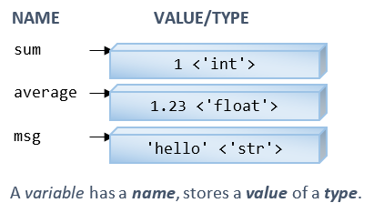

I personally recommend that you learn a traditional general-purpose programming language (such as C/C++/Java) before learning scripting language like Python/JavaScript/Perl/PHP because they are less structure than the traditional languages with many fancy features.
Introduction
Python is created by Dutch Guido van Rossum around 1991. Python is an open-source project. The mother site is www.python.org.
The main features of Python are:
- Python is an easy and intuitive language. Python scripts are easy to read and understand.
- Python (like Perl) is expressive. A single line of Python code can do many lines of code in traditional general-purpose languages (such as C/C++/Java).
- Python is free and open source. It is cross-platform and runs on Windows, Linux/Unix, and macOS.
- Python is well suited for rapid application development (RAD). You can code an application in Python in much shorter time than other general-purpose languages (such as C/C++/Java). Python can be used to write small applications and rapid prototypes, but it also scales well for developing large-scale project.
- Python is a scripting language and dynamically typed. Like most of the scripting languages (e.g., Perl, JavaScript), Python associates types with objects, instead of variables. That is, a variable can be assigned a value of any type, a list (array) can contain objects of different types.
- Python provides automatic memory management. You do not need to allocate and free memory in your programs.
- Python provides high-level data types such as dynamic array and dictionary (or associative array).
- Python is object-oriented.
- Python is not a fully compiled language. It is compiled into internal bytecodes, which is then interpreted. Hence, Python is not as fast as fully-compiled languages such as C/C++.
- Python comes with a huge set of libraries including graphical user interface (GUI) toolkit, web programming library, networking, and etc.
Python has 3 versions:
- Python 1: the initial version.
- Python 2: released in 2000, with many new features such as garbage collector and support for Unicode.
- Python 3 (Python 3000 or py3k): A major upgrade released in 2008. Python 3 is NOT backward compatible with Python 2.
Python 2 or Python 3?
Currently, two versions of Python are supported in parallel, version 2 and version 3. There are unfortunately incompatible. This situation arises because when Guido Van Rossum (the creator of Python) decided to bring significant changes to Python 2, he found that the new changes would be incompatible with the existing codes. He decided to start a new version called Python 3, but continue to maintain the old Python 2 without introducing new features. Python 3.0 was released in 2008, while Python 2.7 in 2010.
AGAIN, TAKE NOTE THAT PYTHON 2 AND PYTHON 3 ARE NOT COMPATIBLE!!! You need to decide whether to use Python 2 or Python 3. Start your new projects using Python 3. Use Python 2 only for maintaining legacy projects.
To check the version of your Python, issue this command:
$ Python --version
Documentation
Python documentation and language reference are provided online @ https://docs.python.org.
Python Basic Syntaxes
EOL Comment
A Python comment begins with a hash sign (#) and last till the end of the current line (EOL). Comments are ignored by the Python Interpreter, but they are critical in providing explanation and documentation for others (and yourself three days later) to read your program. Use comments liberally.
There is NO multi-line comment in Python?! (C/C++/Java supports multi-line comments via /* ... */.)
Statements
A Python statement is delimited by a newline. A statement cannot cross line boundaries, except:
- An expression in parentheses
(), square bracket[], and curly braces{}can span multiple lines. - A backslash (
\) at the end of the line denotes continuation to the next line. This is an old rule and is NOT recommended as it is error prone.
Unlike C/C++/C#/Java, you don't place a semicolon (;) at the end of a Python statement. But you can place multiple statements on a single line, separated by semicolon (;). For examples,
# One Python statement in one line, terminated by a newline. # There is no semicolon at the end of a statement. >>> x = 1 # Assign 1 to variable x >>> print(x) # Print the value of the variable x 1 >>> x + 1 2 >>> y = x / 2 >>> y 0.5 # You can place multiple statements in one line, separated by semicolon. >>> print(x); print(x+1); print(x+2) # No ending semicolon 1 2 3 # An expression in brackets [] (i.e., list) can span multiple lines >>> x = [1, 22, 333] # Re-assign a list denoted as [v1, v2, ...] to variable x >>> x [1, 22, 333] # An expression in braces {} (i.e., associative array) can also span multiple lines >>> x = {'name':'Peter', 'gender':'male', 'age':21 } # Re-assign a dictionary denoted as {k1:v1, k2:v2,...} to variable x >>> x {'name': 'Peter', 'gender': 'male', 'age': 21} # An expression in parentheses () can also span multiple lines # You can break a long expression into several lines by enclosing it with parentheses () >>> x =(1 + 2 + 3 - 4) >>> x 2 # You can break a long string into several lines with parentheses () too >>> s = ('testing ' # No commas 'hello, ' 'world!') >>> s 'testing hello, world!'
Block, Indentation and Compound Statements
A block is a group of statements executing as a unit. Unlike C/C++/C#/Java, which use braces {} to group statements in a body block, Python uses indentation for body block. In other words, indentation is syntactically significant in Python - the body block must be properly indented. This is a good syntax to force you to indent the blocks correctly for ease of understanding!!!
A compound statement, such as conditional (if-else), loop (while, for) and function definition (def), begins with a header line terminated with a colon (:); followed by the indented body block, as follows:
header_1: # Headers are terminated by a colon statement_1_1 # Body blocks are indented (recommended to use 4 spaces) statement_1_2 ...... header_2: statement_2_1 statement_2_2 ...... # You can place the body-block in the same line, separating the statement by semi-colon (;) # This is NOT recommended. header_1: statement_1_1 header_2: statement_2_1; statement_2_2; ......
For examples,
# if-else x = 0 if x == 0: print('x is zero') else: print('x is not zero') # or, in the same line if x == 0: print('x is zero') else: print('x is not zero') # while-loop sum from 1 to 100 sum = 0 number = 1 while number <= 100: sum += number number += 1 print(sum) # or, in the same line while number <= 100: sum += number; number += 1 # Define the function sum_1_to_n() def sum_1_to_n(n): """Sum from 1 to the given n""" sum = 0; i = 0; while (i <= n): sum += i i += 1 return sum print(sum_1_to_n(100)) # Invoke function
Python does not specify how much indentation to use, but all statements of the SAME body block must start at the SAME distance from the right margin. You can use either space or tab for indentation but you cannot mix them in the SAME body block. It is recommended to use 4 spaces for each indentation level.
The trailing colon (:) and body indentation is probably the strangest feature in Python, if you come from C/C++/C#/Java. Python imposes strict indentation rules to force programmers to write readable codes!
Variables, Identifiers and Constants
Like all programming languages, a variable is a named storage location. A variable has a name (or identifier) and holds a value.
Like most of the scripting interpreted languages (such as JavaScript/Perl), Python is dynamically typed. You do NOT need to declare a variable before using it. A variable is created via the initial assignment. (Unlike traditional general-purpose static typed languages like C/C++/Java/C#, where you need to declare the name and type of the variable before using the variable.)
For example,
>>> sum = 1 # Create a variable called sum by assigning an integer into it >>> sum 1 >>> type(sum) # Check the data type <class 'int'> >>> average = 1.23 # Create a variable called average by assigning a floating-point number into it >>> average 1.23 >>> average = 4.5e-6 # Re-assign a floating-point value in scientific notation >>> average 4.5e-06 >>> type(average) # Check the data type <class 'float'> >>> average = 78 # Re-assign an integer value >>> average 78 >>> type(average) # Check the data type <class 'int'> # Change to 'int' >>> msg = 'Hello' # Create a variable called msg by assigning a string into it >>> msg 'Hello' >>> type(msg) # Check the data type <class 'str'>
As mentioned, Python is dynamic typed. Python associates types with the objects, not the variables, i.e., a variable can hold object of any types, as shown in the above examples.
Rules of Identifier (Names)
An identifier starts with a letter (A-Z, a-z) or an underscore (_), followed by zero or more letters, underscores and digits (0-9). Python does not allow special characters such as $ and @.
By convention, Variables start with an underscore (_) are private variables.
Keywords
Python 3 has 35 reserved words (or keywords), which cannot be used as identifiers.
True,False,None(boolean and special literals)import,as,fromif,elif,else,for,in,while,break,continue,pass,with(flow control)def,return,lambda,global,nonlocal(function)classand,or,not,is,del(operators)try,except,finally,raise,assert(error handling)await,async,yield
Variable Naming Convention
A variable name is a noun, or a noun phrase made up of several words. There are two conventions:
- In lowercase words and optionally joined with underscore if it improves readability, e.g.,
num_students,x_max,myvar,isvalid, etc. - In the so-called camel-case where the first word is in lowercase, and the remaining words are initial-capitalized, e.g.,
numStudents,xMax,yMin,xTopLeft,isValidInput, andthisIsAVeryVeryLongVariableName.
Recommendations
- It is important to choose a name which is self-descriptive and closely reflects the meaning of the variable. For example, use
numStudents(notnorx), to store the number of students. It is alright to use abbreviations, e.g.,idxfor index. - Do not use meaningless names like
a,b,c,i,j,k,n,i1,i2,i3,j99,exercise85(what is the purpose of this exercise?), andexample12(What is this example about?). - Avoid single-letter names like
i,j,k,a,b,c, which are easier to type but often meaningless. Exceptions are common names likex,y,zfor coordinates,ifor index. Long names are harder to type, but self-document your program. (I suggest you spend sometimes practicing your typing.) - Use singular and plural nouns prudently to differentiate between singular and plural variables. For example, you may use the variable
rowto refer to a single row number and the variablerowsto refer to many rows (such as a list of rows - to be discussed later).
Constants
Python does not support constants, where its contents cannot be modified.
const, Java via keyword final.It is a convention to name a variable in uppercase joined with underscores, e.g., MAX_ROWS, SCREEN_X_MAX, to indicate that it should not be modified in the program. Nevertheless, nothing prevents it from being modified in Python.
Data Types: Number, String and List
Python supports various number type such as int (for integers such as 123, -456), float (for floating-point number such as 3.1416, 1.2e3, -4.5E-6), and bool (for boolean of either True or False).
Python supports text string (a sequence of characters). In Python, strings can be delimited with single-quotes or double-quotes, e.g., 'hello', "world", '' or "" (empty string).
Python supports a dynamic-array structure called list, denoted as lst = [v1, v2, ..., vn]. You can reference the i-th element as lst[i]. Python's list is similar to C/C++/Java's array, but it is NOT fixed size, and can be expanded dynamically during runtime.
I will describe these data types in detail in the later section.
Console Input/Output: input() and print() Built-in Functions
You can use built-in function input() to read input from the keyboard (as a string) and print() to print output to the console. For example,
>>> x = input('Enter a number: ')
Enter a number: 5
>>> x
'5' # A quoted string
>>> type(x) # Check data type
<class 'str'>
>>> print(x)
5
# Cast input from the 'str' input to 'int'
>>> x = int(input('Enter an integer: '))
Enter an integer: 5
>>> x
5 # int
>>> type(x) # Check data type
<class 'int'>
>>> print(x)
5
print()
The built-in function print() has the following signature:
print(*objects, sep=' ', end='\n', file=sys.stdout, flush=False)
# Print objects to the text stream file (default standard output sys.stdout),
# separated by sep (default space) and followed by end (default newline \n).
For examples,
>>> print('apple') # Single item
apple
>>> print('apple', 'orange') # More than one items separated by commas
apple orange
>>> print('apple', 'orange', 'banana')
apple orange banana
print()'s separator (sep) and ending (end)
You can use the optional keyword-argument sep='x' to set the separator string (default is space), and end='x' for ending string (default is newline). For examples,
# print() with default newline >>> for item in [1, 2, 3, 4]: print(item) # default is newline 1 2 3 4 # print() without newline >>> for item in [1, 2, 3, 4]: print(item, end='') # suppress end string 1234 # print() with some arbitrary ending string >>> for item in [1, 2, 3, 4]: print(item, end='--') 1--2--3--4--
# Test separator between items >>> print('apple', 'orange', 'banana') # default is space
apple orange banana >>> print('apple', 'orange', 'banana', sep=',')
apple,orange,banana
>>> print('apple', 'orange', 'banana', sep=':')
apple:orange:banana
>>> print('apple', 'orange', 'banana', sep='|')
apple|orange|banana
>>> print('apple', 'orange', 'banana', sep='\n') # newline
apple
orange
banana
print in Python 2 vs Python 3
Recall that Python 2 and Python 3 are NOT compatible. In Python 2, you can use "print item", without the parentheses (because print is a keyword in Python 2). In Python 3, parentheses are required as Python 3's print() is a function. For example,
# Python 3 >>> print('hello') hello >>> print 'hello' File "<stdin>", line 1 print 'hello' ^ SyntaxError: Missing parentheses in call to 'print' >>> print('aaa', 'bbb') aaa bbb # Treated as multiple arguments, printed without parentheses # Python 2 >>> print('Hello') Hello >>> print 'hello' hello >>> print('aaa', 'bbb') ('aaa', 'bbb') # Treated as a tuple (of items). Print the tuple with parentheses >>> print 'aaa', 'bbb' aaa bbb # Treated as multiple arguments
Important: Always use print() function with parentheses, for portability!
Data Types and Dynamic Typing
Python has a large number of built-in data types, such as Numbers (Integer, Float, Boolean, Complex Number), String, List, Tuple, Set, Dictionary and File. More high-level data types, such as Decimal and Fraction, are supported by external modules.
You can use the built-in function type(varName) to check the type of a variable or literal.
Number Types
Python supports these built-in number types:
- Integers (type
int): e.g.,123,-456. Unlike C/C++/Java, integers are of unlimited size in Python. For example,>>> 123 + 456 - 789 -210 >>> 123456789012345678901234567890 + 1 123456789012345678901234567891 >>> 1234567890123456789012345678901234567890 + 1 1234567890123456789012345678901234567891 >>> 2 ** 888 # Raise 2 to the power of 888 ...... >>> len(str(2 ** 888)) # Convert integer to string and get its length 268 # 2 to the power of 888 has 268 digits >>> type(123) # Get the type <class 'int'> >>> help(int) # Show the help menu for type int
You can also express integers in hexadecimal with prefix0x(or0X); in octal with prefix0o(or0O); and in binary with prefix0b(or0B). For examples,0x1abc,0X1ABC,0o1776,0b11000011. - Floating-point numbers (type
float): e.g.,1.0,-2.3,3.4e5,-3.4E-5, with a decimal point and an optional exponent (denoted byeorE).floats are 64-bit double precision floating-point numbers. For example,>>> 1.23 * -4e5 -492000.0 >>> type(1.2) # Get the type <class 'float'> >>> import math # Using the math module >>> math.pi 3.141592653589793 >>> import random # Using the random module >>> random.random() # Generate a random number in [0, 1) 0.890839384187198
- Booleans (type
bool): takes a value of eitherTrueorFalse. Take note of the spelling in initial-capitalized.>>> 8 == 8 # Compare True >>> 8 == 9 False >>> type(True) # Get type <class 'bool'> >>> type (8 == 8)
In Python, integer
<class 'bool'>0, an empty value (such as empty string'',"", empty list[], empty tuple(), empty dictionary{}), andNoneare treated asFalse; anything else are treated asTrue.>>> bool(0) # Cast int 0 to bool False >>> bool(1) # Cast int 1 to bool True >>> bool('') # Cast empty string to bool False >>> bool('hello') # Cast non-empty string to bool True >>> bool([]) # Cast empty list to bool False >>> bool([1, 2, 3]) # Cast non-empty list to bool True
Booleans can also act as integers in arithmetic operations with1forTrueand0forFalse. For example,>>> True + 3 4 >>> False + 1 1
- Complex Numbers (type
complex): e.g.,1+2j,-3-4j. Complex numbers have a real part and an imaginary part denoted with suffix ofj(orJ). For example,>>> x = 1 + 2j # Assign variable x to a complex number >>> x # Display x (1+2j) >>> x.real # Get the real part 1.0 >>> x.imag # Get the imaginary part 2.0 >>> type(x) # Get type <class 'complex'> >>> x * (3 + 4j) # Multiply two complex numbers (-5+10j)
- Others: Other number types are provided by external modules, such as
decimalmodule for decimal fixed-point numbers,fractionmodule for rational numbers.# floats are imprecise >>> 0.1 * 3 0.30000000000000004 # Decimal are precise >>> import decimal # Using the decimal module >>> x = decimal.Decimal('0.1') # Construct a Decimal object >>> x * 3 # Multiply with overloaded * operator Decimal('0.3') >>> type(x) # Get type <class 'decimal.Decimal'>
Dynamic Typing and Assignment Operator
Recall that Python is dynamic typed (instead of static typed like C/C++/Java).
- Python associates type with object, instead of variable. That is, a variable does not have a fixed type and can be assigned an object of any type. A variable simply provides a reference to an object.
- You do not need to declare a variable before using a variable. A variable is created automatically when a value is first assigned, which links the assigned object to the variable.
You can use built-in function type(var_name) to get the object type referenced by a variable.
>>> x = 1 # Assign an int value to create variable x >>> x # Display x 1 >>> type(x) # Get the type of x <class 'int'> >>> x = 1.0 # Re-assign a float to x >>> x 1.0 >>> type(x) # Show the type <class 'float'> >>> x = 'hello' # Re-assign a string to x >>> x 'hello' >>> type(x) # Show the type <class 'str'> >>> x = '123' # Re-assign a string (of digits) to x >>> x '123' >>> type(x) # Show the type <class 'str'>
Type Casting: int(x), float(x), str(x)
You can perform type conversion (or type casting) via built-in functions int(x), float(x), str(x), bool(x), etc. For example,
>>> x = '123' # string >>> type(x) <class 'str'> >>> x = int(x) # Parse str to int, and assign back to x >>> x 123 >>> type(x) <class 'int'> >>> x = float(x) # Convert x from int to float, and assign back to x >>> x 123.0 >>> type(x) <class 'float'> >>> x = str(x) # Convert x from float to str, and assign back to x >>> x '123.0' >>> type(x) <class 'str'> >>> len(x) # Get the length of the string 5 >>> x = bool(x) # Convert x from str to boolean, and assign back to x >>> x # Non-empty string is converted to True True >>> type(x) <class 'bool'> >>> x = str(x) # Convert x from bool to str >>> x 'True'
In summary, a variable does not associate with a type. Instead, a type is associated with an object. A variable provides a reference to an object (of a certain type).
Check Instance's Type: isinstance(instance, type)
You can also use the built-in function isinstance(instance, type) to check if the instance belong to the type. For example,
>>> isinstance(123, int)
True
>>> isinstance('a', int)
False
>>> isinstance('a', str)
True
The Assignment Operator (=)
In Python, you do not need to declare variables before using the variables. The initial assignment creates a variable and links the assigned value to the variable. For example,
>>> x = 8 # Create a variable x by assigning a value >>> x = 'Hello' # Re-assign a value (of a different type) to x >>> y # Cannot access undefined (unassigned) variable NameError: name 'y' is not defined
Pair-wise Assignment and Chain Assignment
For example,
>>> a = 1 # Ordinary assignment >>> a 1 >>> b, c, d = 123, 4.5, 'Hello' # Pair-wise assignment of 3 variables and values >>> b 123 >>> c 4.5 >>> d 'Hello' >>> e = f = g = 123 # Chain assignment >>> e 123 >>> f 123 >>> g 123
Assignment operator is right-associative, i.e., a = b = 123 is interpreted as (a = (b = 123)).
del Operator
You can use del operator to delete a variable. For example,
>>> x = 8 # Create variable x via assignment >>> x 8 >>> del x # Delete variable x >>> x NameError: name 'x' is not defined
Number Operations
Arithmetic Operators (+, -, *, /, //, **, %)
Python supports these arithmetic operators:
| Operator | Mode | Usage | Description | Example |
|---|---|---|---|---|
+ |
Binary Unary |
x + y |
Addition Positive |
|
- |
Binary Unary |
x - y |
Subtraction Negate |
|
* |
Binary | x * y |
Multiplication | |
/ |
Binary | x / y |
Float Division (Returns a float) |
1 / 2 ⇒ 0.5 |
// |
Binary | x // y |
Integer Division (Returns the floor integer) |
1 // 2 ⇒ 0 |
** |
Binary | x ** y |
Exponentiation | 2 ** 5 ⇒ 32 |
% |
Binary | x % y |
Modulus (Remainder) | 9 % 2 ⇒ 1 |
In Java, -1/2 returns 0. That is, int division returns a truncated int towards zero.
Python's integer division returns a floor integer, e.g., -1//2 gives -1.
Compound Assignment Operators (+=, -=, *=, /=, //=, **=, %=)
Each of the arithmetic operators has a corresponding shorthand assignment counterpart, i.e., +=, -=, *=, /=, //=, **= and %=. For example i += 1 is the same as i = i + 1.
Increment/Decrement (++, --)?
Python does not support increment (++) and decrement (--) operators (as in C/C++/Java). You need to use i = i + 1 or i += 1 for increment.
Python accepts ++i ⇒ +(+i) ⇒ i, and --i. Don't get trap into this. But Python flags a syntax error for i++ and i--.
Mixed-Type Operations
For mixed-type operations, e.g., 1 + 2.3 (int + float), the value of the "smaller" type is first promoted to the "bigger" type. It then performs the operation in the "bigger" type and returns the result in the "bigger" type. In Python, int is "smaller" than float, which is "smaller" than complex.
Relational (Comparison) Operators (==, !=, <, <=, >, >=, in, not in, is, is not)
Python supports these relational (comparison) operators that return a bool value of either True or False.
| Operator | Mode | Usage | Description | Example |
|---|---|---|---|---|
== |
Binary | x == y |
Comparison Return bool of either True or False |
|
in |
Binary | x in seq |
Check if x is contained in the sequence yReturn bool of either True or False |
lst = [1, 2, 3] |
is |
Binary | x is y |
Check if x and y are referencing the same objectReturn bool of either True or False |
Example: [TODO]
Logical Operators (and, or, not)
Python supports these logical (boolean) operators, that operate on boolean values.
| Operator | Mode | Usage | Description | Example |
|---|---|---|---|---|
and |
Binary | x and y |
Logical AND | |
or |
Binary | x or y |
Logical OR | |
not |
Unary | not x |
Logical NOT |
Notes:
- Python's logical operators are typed out in word, unlike C/C++/Java which uses symbols
&&,||and!. - Python does not have an exclusive-or (
xor) boolean operator.
Example: [TODO]
Built-in Functions
Python provides many built-in functions for numbers, including:
- Mathematical functions:
round(),pow(),abs(), etc. type()to get the type.- Type conversion functions:
int(),float(),str(),bool(), etc. - Base radix conversion functions:
hex(),bin(),oct().
For examples,
# Test built-in function round() >>> x = 1.23456 >>> type(x) <type 'float'> # Python 3 >>> round(x) # Round to the nearest integer 1 >>> type(round(x)) <class 'int'> # Python 2 >>> round(x) 1.0 >>> type(round(x)) <type 'float'> >>> round(x, 1) # Round to 1 decimal place 1.2 >>> round(x, 2) # Round to 2 decimal places 1.23 >>> round(x, 8) # No change - not for formatting 1.23456 # Test other built-in functions >>> pow(2, 5) 32 >>> abs(-4.1) 4.1 # Test base radix conversion >>> hex(1234) '0x4d2' >>> bin(254) '0b11111110' >>> oct(1234) '0o2322' >>> 0xABCD # Shown in decimal by default 43981 # List built-in functions >>> dir(__built-ins__) ['type', 'round', 'abs', 'int', 'float', 'str', 'bool', 'hex', 'bin', 'oct',......] # Show number of built-in functions >>> len(dir(__built-ins__)) # Python 3 151 >>> len(dir(__built-ins__)) # Python 2 144 # Show documentation of __built-ins__ module >>> help(__built-ins__) ......
Bitwise Operators (Advanced)
Python supports these bitwise operators:
| Operator | Mode | Usage | Description | Examplex=0b10000001y=0b10001111 |
|---|---|---|---|---|
& |
binary | x & y |
bitwise AND | x & y ⇒ 0b10000001 |
| |
binary | x ! y |
bitwise OR | x | y ⇒ 0b10001111 |
~ |
Unary | ~x |
bitwise NOT (or negate) | ~x ⇒ -0b10000010 |
^ |
binary | x ^ y |
bitwise XOR | x ^ y ⇒ 0b00001110 |
<< |
binary | x << count |
bitwise Left-Shift (padded with zeros) | x << 2 ⇒ 0b1000000100 |
>> |
binary | x >> count |
bitwise Right-Shift (padded with zeros) | x >> 2 ⇒ 0b100000 |
String
In Python, strings can be delimited by a pair of single-quotes ('...') or double-quotes ("..."). Python also supports multi-line strings via triple-single-quotes ('''...''') or triple-double-quotes ("""...""").
To place a single-quote (') inside a single-quoted string, you need to use escape sequence \'. Similarly, to place a double-quote (") inside a double-quoted string, use \". There is no need for escape sequence to place a single-quote inside a double-quoted string; or a double-quote inside a single-quoted string.
A triple-single-quoted or triple-double-quoted string can span multiple lines. There is no need for escape sequence to place a single/double quote inside a triple-quoted string. Triple-quoted strings are useful for multi-line documentation, HTML and other codes.
Python 3 uses Unicode character set to support internationalization (i18n).
>>> s1 = 'apple' >>> s1 'apple' >>> s2 = "orange" >>> s2 'orange' >>> s3 = "'orange'" # Escape sequence not required >>> s3 "'orange'" >>> s3 ="\"orange\"" # Escape sequence needed >>> s3 '"orange"' # A triple-single/double-quoted string can span multiple lines >>> s4 = """testing 12345""" >>> s4 'testing\n12345'
Escape Sequences for Characters (\code)
Like C/C++/Java, you need to use escape sequences (a back-slash + a code) for:
- Special non-printable characters, such as tab (
\t), newline (\n), carriage return (\r) - Resolve ambiguity, such as
\"(for"inside double-quoted string),\'(for'inside single-quoted string),\\(for\ \xhhfor character in hex value and\ooofor octal value\uxxxxfor 4-hex-digit (16-bit) Unicode character and\Uxxxxxxxxfor 8-hex-digit (32-bit) Unicode character.
Raw Strings (r'...' or r"...")
You can prefix a string by r to disable the interpretation of escape sequences (i.e., \code), i.e., r'\n' is '\'+'n' (two characters) instead of newline (one character). Raw strings are used extensively in regex (to be discussed in module re section).
Strings are Immutable
Strings are immutable, i.e., their contents cannot be modified. String functions such as upper(), replace() returns a new string object instead of modifying the string under operation.
Built-in Functions and Operators for Strings
You can operate on strings using:
- built-in functions such as
len(); - operators such as
in(contains),+(concatenation),*(repetition), indexing[i]and[-i], and slicing[m:n:step].
Note: These functions and operators are applicable to all sequence data types including string, list, and tuple (to be discussed later).
| Function / Operator |
Usage | Description | Exampless = 'Hello' |
|---|---|---|---|
len() |
len(str) |
Length | len(s) ⇒ 5 |
in |
substr in str |
Contain? Return bool of either True or False |
'ell' in s ⇒ True |
+ |
str + str1 |
Concatenation | s + '!' ⇒ 'Hello!' |
* |
str * count |
Repetition | s * 2 ⇒ 'HelloHello' |
[i] |
str[i] |
Indexing to get a character. The front index begins at 0;back index begins at -1 (=len(str)-1). |
s[1] ⇒ 'e' |
[m:n:step] |
str[m:n:step] |
Slicing to get a substring. From index m (included) to n (excluded) with step size.The defaults are: m=0, n=-1, step=1. |
s[1:3] ⇒ 'el' |
For examples,
>>> s = "Hello, world" # Assign a string literal to the variable s >>> type(s) # Get data type of s <class 'str'> >>> len(s) # Length 12 >>> 'ello' in s # The in operator True # Indexing >>> s[0] # Get character at index 0; index begins at 0 'H' >>> s[1] 'e' >>> s[-1] # Get Last character, same as s[len(s) - 1] 'd' >>> s[-2] # 2nd last character 'l' # Slicing >>> s[1:3] # Substring from index 1 (included) to 3 (excluded) 'el' >>> s[1:-1] 'ello, worl' >>> s[:4] # Same as s[0:4], from the beginning 'Hell' >>> s[4:] # Same as s[4:-1], till the end 'o, world' >>> s[:] # Entire string; same as s[0:len(s)] 'Hello, world' # Concatenation (+) and Repetition (*) >>> s = s + " again" # Concatenate two strings >>> s 'Hello, world again' >>> s * 3 # Repeat 3 times 'Hello, world againHello, world againHello, world again' # str can only concatenate with str, not with int and other types >>> s = 'hello' >>> print('The length of \"' + s + '\" is ' + len(s)) # len() is int TypeError: can only concatenate str (not "int") to str >>> print('The length of \"' + s + '\" is ' + str(len(s))) The length of "hello" is 5 # String is immutable >>> s[0] = 'a' TypeError: 'str' object does not support item assignment
Character Type?
Python does not have a dedicated character data type. A character is simply a string of length 1. You can use the indexing operator to extract individual character from a string, as shown in the above example; or process individual character using for-in loop (to be discussed later).
The built-in functions ord() and chr() operate on character, e.g.,
# ord(c) returns the integer ordinal (Unicode) of a one-character string >>> ord('A') 65 >>> ord('水') 27700 # chr(i) returns a one-character string with Unicode ordinal i; 0 <= i <= 0x10ffff. >>> chr(65) 'A' >>> chr(27700) '水'
Unicode vs ASCII
In Python 3, strings are defaulted to be Unicode. ASCII strings are represented as byte strings, prefixed with b, e.g., b'ABC'.
In Python 2, strings are defaulted to be ASCII strings (byte strings). Unicode strings are prefixed with u.
You should always use Unicode for internationalization (i18n)!
String-Specific Member Functions
Python supports strings via a built-in class called str (We will describe class in the Object-Oriented Programming chapter). The str class provides many member functions. Since string is immutable, most of these functions return a new string. The commonly-used member functions are as follows, supposing that s is a str object:
str.strip(),str.rstrip(),str.lstrip(): strip the leading and trailing whitespaces, the right (trailing) whitespaces; and the left (leading) whitespaces, respectively.str.upper(),str.lower(): Return a uppercase/lowercase counterpart, respectively.str.isupper(),str.islower(): Check if the string is uppercase/lowercase, respectively.str.find(key_str):str.index(key_str):str.startswith(key_str):str.endswith(key_str):str.split(delimiter_str),delimiter_str.join(strings_list):
>>> dir(str) # List all attributes of the class str [..., 'capitalize', 'casefold', 'center', 'count', 'encode', 'endswith', 'expandtabs', 'find', 'format', 'format_map', 'index', 'isalnum', 'isalpha', 'isascii', 'isdecimal', 'isdigit', 'isidentifier', 'islower', 'isnumeric', 'isprintable', 'isspace', 'istitle', 'isupper', 'join', 'ljust', 'lower', 'lstrip', 'maketrans', 'partition', 'replace', 'rfind', 'rindex', 'rjust', 'rpartition', 'rsplit', 'rstrip', 'split', 'splitlines', 'startswith', 'strip', 'swapcase', 'title', 'translate', 'upper', 'zfill'] >>> s = 'Hello, world' >>> type(s) <class 'str'> >>> dir(s) # List all attributes of the object s ....... >>> help(s.find) # Show the documentation of member function find ....... >>> s.find('ll') # Find the beginning index of the substring 2 >>> s.find('app') # find() returns -1 if not found -1 >>> s.index('ll') # index() is the same as find(), but raise ValueError if not found 2 >>> s.index('app') ValueError: substring not found >>> s.startswith('Hell') True >>> s.endswith('world') True >>> s.replace('ll', 'xxx') 'Hexxxo, world' >>> s.isupper() False >>> s.upper() 'HELLO, WORLD' >>> s.split(', ') # Split into a list with the given delimiter ['Hello', 'world'] >>> ', '.join(['hello', 'world', '123']) # Join all strings in the list using the delimiter 'hello, world, 123' >>> s = ' testing 12345 ' >>> s.strip() # Strip leading and trailing whitespaces 'testing 12345' >>> s.rstrip() # Strip trailing (right) whitespaces ' testing 12345' >>> s.lstrip() # Strip leading (left) whitespaces 'testing 12345 ' # List all the whitespace characters - in module string, attribute whitespace >>> import string >>> string.whitespace # All whitespace characters ' \t\n\r\x0b\x0c' >>> string.digits # All digit characters '0123456789' >>> string.hexdigits # All hexadecimal digit characters '0123456789abcdefABCDEF'
String Formatting 1 (New Style): Using str.format() function
There are a few ways to produce a formatted string for output. Python 3 introduces a new style in the str's format() member function with {} as place-holders (called format fields). For examples,
# Replace format fields {} by arguments in format() in the SAME order >>> '|{}|{}|more|'.format('Hello', 'world') '|Hello|world|more|' # You can use 'positional' index in the form of {0}, {1}, ... >>> '|{0}|{1}|more|'.format('Hello', 'world') '|Hello|world|more|' >>> '|{1}|{0}|more|'.format('Hello', 'world') '|world|Hello|more|' # You can use 'keyword' inside {} >>> '|{greeting}|{name}|'.format(greeting='Hello', name='Peter') '|Hello|Peter|' # Mixing 'positional' and 'keyword' >>> '|{0}|{name}|more|'.format('Hello', name='Peter') '|Hello|Peter|more|' >>> '|{}|{name}|more|'.format('Hello', name='Peter') '|Hello|Peter|more|' # You can specify field-width with :n, # alignment (< for left-align, > for right-align, ^ for center-align) and # padding (or fill) character. >>> '|{1:8}|{0:7}|'.format('Hello', 'Peter') # Set field-width '|Peter |Hello |' # Default left-aligned >>> '|{1:8}|{0:>7}|{2:-<10}|'.format('Hello', 'Peter', 'again') # Set alignment and padding '|Peter | Hello|again-----|' # > (right align), < (left align), - (fill char) >>> '|{greeting:8}|{name:7}|'.format(name='Peter', greeting='Hi') '|Hi |Peter |' # Format int using ':d' or ':nd' # Format float using ':f' or ':n.mf' >>> '|{0:.3f}|{1:6.2f}|{2:4d}|'.format(1.2, 3.456, 78) '|1.200| 3.46| 78|' # With keywords >>> '|{a:.3f}|{b:6.2f}|{c:4d}|'.format(a=1.2, b=3.456, c=78) '|1.200| 3.46| 78|'
When you pass lists, tuples, or dictionaries (to be discussed later) as arguments into the format() function, you can reference the sequence's elements in the format fields with [index]. For examples,
# list and tuple >>> tup = ('a', 11, 22.22) >>> tup = ('a', 11, 11.11) >>> lst = ['b', 22, 22.22] >>> '|{0[2]}|{0[1]}|{0[0]}|'.format(tup) # {0} matches tup, indexed via [] '|11.11|11|a|' >>> '|{0[2]}|{0[1]}|{0[0]}|{1[2]}|{1[1]}|{1[0]}|'.format(tup, lst) # {0} matches tup, {1} matches lst '|11.11|11|a|22.22|22|b|' # dictionary >>> dict = {'c': 33, 'cc': 33.33} >>> '|{0[cc]}|{0[c]}|'.format(dict) '|33.33|33|' >>> '|{cc}|{c}|'.format(**dict) # As keywords via ** '|33.33|33|'
String Formatting 2: Using str.rjust(n), str.ljust(n), str.center(n), str.zfill(n)
You can also use str's member functions like str.rjust(n) (where n is the field-width), str.ljust(n), str.center(n), str.zfill(n) to format a string. For example,
# Setting field width and alignment >>> '123'.rjust(5) ' 123' >>> '123'.ljust(5) '123 ' >>> '123'.center(5) ' 123 ' >>> '123'.zfill(5) # Pad (Fill) with leading zeros '00123' # Floats >>> '1.2'.rjust(5) ' 1.2' >>> '-1.2'.zfill(6) '-001.2'
String Formatting 3 (Old Style): Using % operator
The old style (in Python 2) is to use the % operator, with C-like printf() format specifiers. For examples,
# %s for str # %ns for str with field-width of n (default right-align) # %-ns for left-align >>> '|%s|%8s|%-8s|more|' % ('Hello', 'world', 'again') '|Hello| world|again |more|' # %d for int # %nd for int with field-width of n # %f for float # %n.mf for float with field-with of n and m decimal digits >>> '|%d|%4d|%6.2f|' % (11, 222, 33.333) '|11| 222| 33.33|'
Avoid using old style for formatting.
Conversion between String and Number: int(), float() and str()
You can use built-in functions int() and float() to parse a "numeric" string to an integer or a float; and str() to convert a number to a string. For example,
# Convert string to int >>> s = '12345' >>> s '12345' >>> type(s)
<class 'str'> >>> i = int(s) >>> i
12345
>>> type(i)
<class 'int'> # Convert string to float >>> s = '55.66' >>> s '55.66' >>> f = float(s) >>> f
55.66
>>> type(f)
<class 'float'> >>> int(s) ValueError: invalid literal for int() with base 10: '55.66' # Convert number to string >>> i = 123 >>> s = str(i) >>> s
'123'
>>> type(s)
<class 'str'> '123'
Concatenate a String and a Number?
You CANNOT concatenate a string and a number (which results in TypeError). Instead, you need to use the str() function to convert the number to a string. For example,
>>> 'Hello' + 123
TypeError: cannot concatenate 'str' and 'int' objects
>>> 'Hello' + str(123)
'Hello123'
The None Value
Python provides a special value called None (take note of the spelling in initial-capitalized), which can be used to initialize an object (to be discussed in OOP later). For example,
>>> x = None >>> type(x) # Get type <class 'NoneType'> >>> print(x) None # Use 'is' and 'is not' to check for 'None' value. >>> print(x is None) True >>> print(x is not None) False
Data Structure: List, Tuple, Dictionary and Set
List [v1, v2,...]
Python has a powerful built-in dynamic array called list.
- A
listis enclosed by square brackets[]. - A
listcan contain items of different types. It is because Python associates types to objects, not variables. - A
listgrows and shrinks in size automatically (dynamically). You do not have to specify its size during initialization. - A
listis mutable. You can update its contents.
Built-in Functions and Operators for list
A list, like string, is a sequence. Hence, you can operate lists using:
- built-in
sequencefunctions such aslen(). - built-in
sequencefunctions forlistof numbers such asmax(),min(), andsum(). - built-in operators such as
in(contains),+(concatenation) and*(repetition),del,[i](indexing), and[m,n,step](slicing).
Notes:
- You can index the items from the front with positive index, or from the back with negative index. E.g., if
lstis a list,lst[0]andlst[1]refer to its first and second items;lst[-1]andlst[-2]refer to the last and second-to-last items. - You can also refer to a sub-list (or slice) using slice notation
lst[m:n:step](from indexm(included) to indexn(excluded) withstepsize).
| Operator | Usage | Description | Exampleslst = [8, 9, 6, 2] |
|---|---|---|---|
in |
x in lst |
Contain?
Return bool of either True or False |
9 in lst ⇒ True |
+ |
lst + lst1 |
Concatenation | lst + [5, 2] |
* |
lst * count |
Repetition | lst * 2 |
[i] |
lst[i] |
Indexing to get an item. Front index begins at 0; back index begins at -1 (or len(lst)-1). |
lst[1] ⇒ 9 |
[m:n:step] |
lst[m:n:step] |
Slicing to get a sublist. From index m (included) to n (excluded) with step size.The defaults are: m is 0, n is len(lst)-1. |
lst[1:3] ⇒ [9, 6] |
del |
del lst[i] |
Delete one or more items | del lst[1] ⇒ [8, 6, 2] (Clear) |
| Function | Usage | Description | Exampleslst = [8, 9, 6, 2] |
|---|---|---|---|
len() |
len(lst) |
Length | len(lst) ⇒ 4 |
max() |
max(lst) |
Maximum value minimum value |
max(lst) ⇒ 9 |
sum() |
sum(lst) |
Sum (for number lists only) | sum(lst) ⇒ 16 |
list, unlike string, is mutable. You can insert, remove and modify its items.
For examples,
>>> lst = [123, 4.5, 'hello', True, 6+7j] # A list can contains items of different types >>> lst [123, 4.5, 'hello', True, (6+7j)] >>> len(lst) # Length 5 >>> type(lst) <class 'list'> # "Indexing" to get a specific element >>> lst[0] 123 >>> lst[-1] # Negative index from the end (6+7j) # Assignment with indexing >>> lst[2] = 'world' # Assign a value to this element >>> lst [123, 4.5, 'world', True, (6+7j)] # "Slicing" to get a sub-list >>> lst[0:2] [123, 4.5] >>> lst[:3] # Same as lst[0:3] [123, 4.5, 'world'] >>> lst[2:] # Same as lst[2: len(lst)] ['world', True, (6+7j)] >>> lst[::2] # Step size of 2 for alternate elements [123, 'world'] >>> lst[::-1] # Use negative index to reverse the list ['world', 4.5, 123] # Assignment with Slicing >>> lst[2:4] ['world', True] # 2-element sub-list >>> lst[2:4] = 0 # Cannot assign a scalar to slice TypeError: can only assign an iterable >>> lst[2:4] = [1, 2, 'a', 'b'] # But can assign a list of any length >>> lst [123, 4.5, 1, 2, 'a', 'b', (6+7j)] >>> lst[1:3] = [] # Remove a sub-list >>> lst [123, 2, 'a', 'b', (6+7j)] >>> lst[::2] = ['x', 'y', 'z'] # Can use step size >>> lst ['x', 2, 'y', 'b', 'z'] >>> lst[::2] = [1, 2, 3, 4] # But need to replace by a list of the same length ValueError: attempt to assign sequence of size 4 to extended slice of size 3 # Operators: in, +, *, del >>> 'x' in lst True >>> 'a' in lst False >>> lst + [6, 7, 8] # Concatenation ['x', 2, 'y', 'b', 'z', 6, 7, 8] >>> lst * 3 # Repetition ['x', 2, 'y', 'b', 'z', 'x', 2, 'y', 'b', 'z', 'x', 2, 'y', 'b', 'z'] >>> del lst[1] # Remove an element via indexing >>> lst ['x', 'y', 'b', 'z'] >>> del lst[::2] # Remove a slice >>> lst ['y', 'z'] # List can be nested >>> lst = [123, 4.5, ['a', 'b', 'c']] >>> lst [123, 4.5, ['a', 'b', 'c']] >>> lst[2] ['a', 'b', 'c']
Appending Items to a list
>>> lst = [123, 'world'] >>> lst[2] # Python performs index bound check IndexError: list index out of range >>> lst[len(lst)] = 4.5 # Cannot append using indexing IndexError: list assignment index out of range >>> lst[len(lst):] = [4.5] # Can append using slicing >>> lst [123, 'world', 4.5] >>> lst[len(lst):] = [6, 7, 8] # Append a list using slicing >>> lst [123, 'world', 4.5, 6, 7, 8] >>> lst.append('nine') # append() one item >>> lst [123, 'world', 4.5, 6, 7, 8, 'nine'] >>> lst.extend(['a', 'b']) # extend() takes a list >>> lst [123, 'world', 4.5, 6, 7, 8, 'nine', 'a', 'b'] >>> lst + ['c'] # '+' returns a new list; while slicing-assignment modifies the list and returns None [123, 'world', 4.5, 6, 7, 8, 'nine', 'a', 'b', 'c'] >>> lst # No change [123, 'world', 4.5, 6, 7, 8, 'nine', 'a', 'b']
Copying a list
>>> l1 = [123, 4.5, 'hello'] >>> l2 = l1[:] # Make a copy via slicing >>> l2 [123, 4.5, 'hello'] >>> l2[0] = 8 # Modify new copy >>> l2 [8, 4.5, 'hello'] >>> l1 # No change in original [123, 4.5, 'hello'] >>> l3 = l1.copy() # Make a copy via copy() function, same as above # Contrast with direct assignment >>> l4 = l1 # Direct assignment (of reference) >>> l4 [123, 4.5, 'hello'] >>> l4[0] = 8 # Modify new copy >>> l4 [8, 4.5, 'hello'] >>> l1 # Original also changes [8, 4.5, 'hello']
list-Specific Member Functions
The list class provides many member functions. Suppose lst is a list object:
lst.index(item): return the index of the first occurrence ofitem; or error.lst.append(item): append the givenitembehind thelstand returnNone; same as slicing operationlst[len(lst):] = [item].lst.extend(lst1): append the given listlst1behind thelstand returnNone; same as slicing operationlst[len(lst):] = lst1.lst.insert(index, item): insert the givenitembefore theindexand returnNone. Hence,lst.insert(0, item)inserts before the first item of thelst;lst.insert(len(lst), item)inserts at the end of thelstwhich is the same aslst.append(item).lst.remove(item): remove the first occurrence ofitemfrom thelstand returnNone; or error.lst.pop(): remove and return the last item of thelst.lst.pop(index): remove and return the indexed item of thelst.lst.clear(): remove all the items from thelstand returnNone; same as operatordel lst[:].lst.count(item): return the occurrences ofitem.lst.reverse(): reverse thelstin place and returnNone.lst.sort(): sort thelstin place and returnNone.lst.copy(): return a copy oflst; same aslst[:].
Recall that list is mutable (unlike string which is immutable). These functions modify the list directly. For examples,
>>> lst = [123, 4.5, 'hello', [6, 7, 8]] # list can also contain list >>> lst [123, 4.5, 'hello', [6, 7, 8]] >>> type(lst) # Show type <class 'list'> >>> dir(lst) # Show all the attributes of the lst object >>> len(lst) 4 >>> lst.append('apple') # Append item at the back >>> lst [123, 4.5, 'hello', [6, 7, 8], 'apple'] >>> len(lst) 5 >>> lst.pop(1) # Retrieve and remove item at index 4.5 >>> lst [123, 'hello', [6, 7, 8], 'apple'] >>> len(lst) 4 >>> lst.insert(2, 55.66) # Insert item before the index >>> lst [123, 'hello', 55.66, [6, 7, 8], 'apple'] >>> del lst[3:] # Delete the slice (del is an operator , not function) >>> lst [123, 'hello', 55.66] >>> lst.append(55.66) # A list can contain duplicate values >>> lst [123, 'hello', 55.66, 55.66] >>> lst.remove(55.66) # Remove the first item of given value >>> lst [123, 'hello', 55.66] >>> lst.reverse() # Reverse the list in place >>> lst [55.66, 'hello', 123] # Searching and Sorting >>> lst2 = [5, 8, 2, 4, 1] >>> lst2.sort() # In-place sorting >>> lst2 [1, 2, 4, 5, 8] >>> lst2.index(5) # Get the index of the given item 3 >>> lst2.index(9) ...... ValueError: 9 is not in list >>> lst2.append(1) >>> lst2 [1, 2, 4, 5, 8, 1] >>> lst2.count(1) # Count the occurrences of the given item 2 >>> lst2.count(9) 0 >>> sorted(lst2) # Built-in function that returns a sorted list [1, 1, 2, 4, 5, 8] >>> lst2 [1, 2, 4, 5, 8, 1] # Not modified
Using list as a last-in-first-out Stack
To use a list as a last-in-first-out (LIFO) stack, use append(item) to add an item to the top-of-stack (TOS) and pop() to remove the item from the TOS.
Using list as a first-in-first-out Queue
To use a list as a first-in-first-out (FIFO) queue, use append(item) to add an item to the end of the queue and pop(0) to remove the first item of the queue.
However, pop(0) is slow! The standard library provide a class collections.deque to efficiently implement deque with fast appends and pops from both ends.
Tuple (v1, v2,...)
Tuple is similar to list except that it is immutable (just like string). Hence, tuple is more efficient than list. A tuple consists of items separated by commas, enclosed in parentheses ().
>>> tup = (123, 4.5, 'hello') # A tuple can contain different types >>> tup (123, 4.5, 'hello') >>> tup[1] # Indexing to get an item 4.5 >>> tup[1:3] # Slicing to get a sub-tuple (4.5, 'hello') >>> tup[1] = 9 # Tuple, unlike list, is immutable TypeError: 'tuple' object does not support item assignment >>> type(tup) <class 'tuple'> >>> lst = list(tup) # Convert to list >>> lst [123, 4.5, 'hello'] >>> type(lst) <class 'list'>
An one-item tuple needs a comma to differentiate from parentheses:
>>> tup = (5,) # An one-item tuple needs a comma >>> tup (5,) >>> x = (5) # Treated as parentheses without comma >>> x 5
The parentheses are actually optional, but recommended for readability. Nevertheless, the commas are mandatory. For example,
>>> tup = 123, 4.5, 'hello' >>> tup (123, 4.5, 'hello') >>> tup2 = 88, # one-item tuple needs a trailing commas >>> tup2 (88,) # However, we can use empty parentheses to create an empty tuple # Empty tuples are quite useless, as tuples are immutable. >>> tup3 = () >>> tup3 () >>> len(tup3) 0
You can operate on tuples using (supposing that tup is a tuple):
- built-in functions such as
len(tup); - built-in functions for tuple of numbers such as
max(tup),min(tup)andsum(tup); - operators such as
in,+and*; and tuple's member functions such astup.count(item),tup.index(item), etc.
Conversion between List and Tuple
You can covert a list to a tuple using built-in function tuple(); and a tuple to a list using list(). For examples,
>>> tuple([1, 2, 3, 1]) # Convert a list to a tuple (1, 2, 3, 1) >>> list((1, 2, 3, 1)) # Convert a tuple to a list [1, 2, 3, 1]
Dictionary (Associative Array) {k1:v1, k2:v2,...}
Python's built-in dictionary type supports key-value pairs (also known as name-value pairs, associative array, or mappings).
- A dictionary is enclosed by a pair of curly braces
{}. The key and value are separated by a colon (:), in the form of{k1:v1, k2:v2, ...} - Unlike list and tuple, which index items using an integer index 0, 1, 2, 3,..., dictionary can be indexed using any key type, including number, string or other types.
- Dictionary is mutable.
>>> dct = {'name':'Peter', 'gender':'male', 'age':21}
>>> dct
{'age': 21, 'name': 'Peter', 'gender': 'male'}
>>> dct['name'] # Get value via key
'Peter'
>>> dct['age'] = 22 # Re-assign a value
>>> dct
{'age': 22, 'name': 'Peter', 'gender': 'male'}
>>> len(dct)
3
>>> dct['email'] = 'peter@nowhere.com' # Add new item
>>> dct
{'name': 'Peter', 'age': 22, 'email': 'peter@nowhere.com', 'gender': 'male'}
>>> type(dct)
<class 'dict'>
# Use dict() built-in function to create a dictionary
>>> dct2 = dict([('a', 1), ('c', 3), ('b', 2)]) # Convert a list of 2-item tuples into a dictionary
>>> dct2
{'b': 2, 'c': 3, 'a': 1}
Dictionary-Specific Member Functions
The dict class has many member methods. The commonly-used are follows (suppose that dct is a dict object):
dct.has_key():dct.items(),dct.keys(),dct.values():dct.clear():dct.copy():dct.get():dct.update(dct2): merge the given dictionarydct2intodct. Override the value if key exists, else, add new key-value.dct.pop():
For Examples,
>>> dct = {'name':'Peter', 'age':22, 'gender':'male'}
>>> dct
{'gender': 'male', 'name': 'Peter', 'age': 22}
>>> type(dct) # Show type
<class 'dict'>
>>> dir(dct) # Show all attributes of dct object
......
>>> list(dct.keys()) # Get all the keys as a list
['gender', 'name', 'age']
>>> list(dct.values()) # Get all the values as a list
['male', 'Peter', 22]
>>> list(dct.items()) # Get key-value as tuples
[('gender', 'male'), ('name', 'Peter'), ('age', 22)]
# You can also use get() to retrieve the value of a given key
>>> dct.get('age', 'not such key') # Retrieve item
22
>>> dct.get('height', 'not such key')
'not such key'
>>> dct['height']
KeyError: 'height'
# Indexing an invalid key raises KeyError, while get() could gracefully handle invalid key
>>> del dct['age'] # Delete (Remove) an item of the given key
>>> dct
{'gender': 'male', 'name': 'Peter'}
>>> 'name' in dct
True
>>> dct.update({'height':180, 'weight':75}) # Merge the given dictionary
>>> dct
{'height': 180, 'gender': 'male', 'name': 'Peter', 'weight': 75}
>>> dct.pop('gender') # Remove and return the item with the given key
'male'
>>> dct
{'name': 'Peter', 'weight': 75, 'height': 180}
>>> dct.pop('no_such_key') # Raise KeyError if key not found
KeyError: 'no_such_key'
>>> dct.pop('no_such_key', 'not found') # Provide a default if key does not exist
'not found'
Set {k1, k2,...}
A set is an unordered, non-duplicate collection of objects. A set is delimited by curly braces {}, just like dictionary. You can think of a set as a collection of dictionary keys without associated values. Sets are mutable.
For example,
>>> st = {123, 4.5, 'hello', 123, 'Hello'}
>>> st # Duplicate removed and ordering may change
{'Hello', 'hello', 123, 4.5}
>>> 123 in st # Test membership
True
>>> 88 in st
False
# Use the built-in function set() to create a set.
>>> st2 = set([2, 1, 3, 1, 3, 2]) # Convert a list to a set. Duplicate removed and unordered.
>>> st2
{1, 2, 3}
>>> st3 = set('hellllo') # Convert a string to a character set.
>>> st3
{'o', 'h', 'e', 'l'}
Set-Specific Operators (&, !, -, ^)
Python supports set operators & (intersection), | (union), - (difference) and ^ (exclusive-or). For example,
>>> st1 = {'a', 'e', 'i', 'o', 'u'}
>>> st1
{'e', 'o', 'u', 'a', 'i'}
>>> st2 = set('hello') # Convert a string to a character set
>>> st2
{'o', 'l', 'e', 'h'}
>>> st1 & st2 # Set intersection
{'o', 'e'}
>>> st1 | st2 # Set union
{'o', 'l', 'h', 'i', 'e', 'a', 'u'}
>>> st1 - st2 # Set difference
{'i', 'u', 'a'}
>>> st1 ^ st2 # Set exclusive-or
{'h', 'i', 'u', 'a', 'l'}
Sequence Types: list, tuple, str
list, tuple, and str are parts of the sequence types. list is mutable, while tuple and str are immutable. They share the common sequence's built-in operators and built-in functions, as follows:
| Opr / Func | Usage | Description |
|---|---|---|
in |
x in seq |
Contain?
Return bool of either True or False |
+ |
seq + seq1 |
Concatenation |
* |
seq * count |
Repetition (Same as: seq + seq + ...) |
[i] |
seq[i] |
Indexing to get an item. Front index begins at 0; back index begins at -1 (or len(seq)-1). |
[m:n:step] |
seq[m:n:step] |
Slicing to get a sub-sequence. From index m (included) to n (excluded) with step size.The defaults are: m is 0, n is len(seq)-1. |
len() |
len(seq) |
Return the Length, minimum and maximum of the sequence |
seq.index() |
seq.index(x) |
Return the index of x in the sequence, or raise ValueError. Search from i (included) to j (excluded) |
seq.count() |
seq.count(x) |
Returns the count of x in the sequence |
For mutable sequences (list), the following built-in operators and built-in functions (func(seq)) and member functions (seq.func(*args)) are supported:
| Opr / Func | Usage | Description |
|---|---|---|
[] |
seq[i] = x |
Replace one item Remove one or more items Remove all items Replace more items with a sequence of the same size |
+= |
seq += seq1 |
Extend by seq1 |
*= |
seq *= count |
Repeat count times |
del |
del seq[i] |
Delete one item Delete more items, same as: seq[m:n] = [] |
seq.clear() |
seq.clear() |
Remove all items, same as: seq[:] = [] or del seq[:] |
seq.append() |
seq.append(x) |
Append x to the end of the sequence, same as: seq[len(seq):len(seq)] = [x] |
seq.extend() |
seq.extend(seq1) |
Extend the sequence, same as: seq[len(seq):len(seq)] = seq1 or seq += seq1 |
seq.insert() |
seq.insert(i, x) |
Insert x at index i, same as: seq[i] = x |
seq.remove() |
seq.remove(x) |
Remove the first occurrence of x |
seq.pop() |
seq.pop() |
Retrieve and remove the last item Retrieve and remove the item at index i |
seq.copy() |
seq.copy() |
Create a shallow copy of seq, same as: seq[:] |
seq.reverse() |
seq.reverse() |
Reverse the sequence in place |
Others
Deque
[TODO]
Heap
[TODO]
Flow Control Constructs
Conditional if-elif-else
The syntax is as follows. The elif (else-if) and else blocks are optional.
# if-else if test: # no parentheses needed for test true_block else: false_block # Nested-if if test_1: block_1 elif test_2: block_2 elif test_3: block_3 ...... ...... elif test_n: block_n else: else_block
For example:
if x == 0: # No need for parentheses around the test condition
print('x is zero')
elif x > 0:
print('x is more than zero')
print('xxxx')
else:
print('x is less than zero')
print('yyyy')
There is no switch-case statement in Python (as in C/C++/Java).
Comparison and Logical Operators
Python supports these comparison (relational) operators, which return a bool of either True or False.
<(less than),<=(less than or equal to),==(equal to),!=(not equal to),>(greater than),>=(greater than or equal to). (This is the same as C/C++/Java.)in,not in: Check if an item is|is not in a sequence (list, tuple, string, set, etc).is,is not: Check if two variables have the same reference.
Python supports these logical (boolean) operators: and, or, not. (C/C++/Java uses &&, ||, !.)
Chain Comparison v1 < x < v2
Python supports chain comparison in the form of v1 < x < v2, e.g.,
>>> x = 8
>>> 1 < x < 10
True
>>> 1 < x and x < 10 # Same as above
True
>>> 10 < x < 20
False
>>> 10 > x > 1
True
>>> not (10 < x < 20)
True
Comparing Sequences
The comparison operators (such as ==, <=) are overloaded to support sequences (such as string, list and tuple).
In comparing sequences, the first items from both sequences are compared. If they differ the outcome is decided. Otherwise, the next items are compared, and so on.
# String >>> 'a' < 'b' # First items differ True >>> 'ab' < 'aa' # First items the same. Second items differ False >>> 'a' < 'b' < 'c' # with chain comparison True # Tuple >>> (1, 2, 3) < (1, 2, 4) # First and second items the same. Third items differ True # List >>> [1, 2, 3] <= [1, 2, 3] # All items are the same True >>> [1, 2, 3] < [1, 2, 3]
False
Shorthand if-else (or Conditional Expression)
The syntax is:
true_expr if test else false_expr
# Evaluate and return true_expr if test is True; otherwise, evaluate and return false_expr
For example,
>>> x = 0
>>> print('zero' if x == 0 else 'not zero')
zero
>>> x = -8
>>> abs_x = x if x > 0 else -x
>>> abs_x
8
Note: Python does not use "? :" for shorthand if-else, as in C/C++/Java.
The while loop
The syntax is as follows:
while test:
true_block
# while loop has an optional else block
while test:
true_block
else: # Run only if no break encountered
else_block
The else block is optional, which will be executed if the loop exits normally without encountering a break statement.
For example,
# Sum from 1 to the given upperbound upperbound = int(input('Enter the upperbound: ')) sum = 0 number = 1 while number <= upperbound: # No need for () around test condition sum += number number += 1 print(sum)
break, continue, pass and loop-else
The break statement breaks out from the innermost loop; the continue statement skips the remaining statements of the loop and continues the next iteration. This is the same as C/C++/Java.
The pass statement does nothing. It serves as a placeholder for an empty statement or empty block.
The loop-else block is executed if the loop is exited normally, without encountering the break statement.
Examples: [TODO]
Using Assignment in while-loop's Test?
In many programming languages, assignment can be part of an expression, which return a value. It can be used in while-loop's test, e.g.,
while data = func(): # Call func() to get data. func() returns None to exit
do_something_on_data
Python issues a syntax error at the assignment operator. In Python, you cannot use assignment operator in an expression.
You could do either of the followings:
while True:
data = func()
if not data:
break # break the endless loop here
do_something_on_data
data = func()
while data:
do_something_on_data
data = func() # Need to repeat the function call
The for-in loop
The for-in loop has the following syntax:
for item in sequence: # sequence: string, list, tuple, dictionary, set true_block # for-in loop with a else block for item in sequence: true_block else: # Run only if no break encountered else_block
You shall read it as "for each item in the sequence...". Again, the else block is executed only if the loop exits normally, without encountering the break statement.
Iterating through Sequences
Iterating through a Sequence (String, List, Tuple, Dictionary, Set) using for-in Loop
The for-in loop is primarily used to iterate through all the items of a sequence. For example,
# String: iterating through each character >>> for char in 'hello': print(char) h e l l o # List: iterating through each item >>> for item in [123, 4.5, 'hello']: print(item) 123 4.5 hello # Tuple: iterating through each item >>> for item in (123, 4.5, 'hello'): print(item) 123 4.5 hello # Dictionary: iterating through each key >>> dct = {'a': 1, 2: 'b', 'c': 'cc'} >>> for key in dct: print(key, ':', dct[key]) a : 1 c : cc 2 : b # Set: iterating through each item >>> for item in {'apple', 1, 2, 'apple'}: print(item) 1 2 apple # File: iterating through each line >>> infile = open('test.txt', 'r') >>> for line in infile: print(line) ...Each line of the file... >>> infile.close()
for(;;) Loop
Python does NOT support the C/C++/Java-like for(int i; i < n; ++i) loop, which uses a varying index for the iterations.
Take note that you cannot use the "for item in lst" loop to modify a list. To modify the list, you need to get the list indexes by creating an index list. For example,
# List to be modified >>> lst = [11, 22, 33] # Cannot use for-in loop to modify the list >>> for item in lst: item += 1 # modifying item does not modify the list >>> print(lst) [11, 22, 33] # No change # You need to modify the list through the indexes >>> idx_lst = [0, 1, 2] # Create your own index list for the list to be processed (not practical) >>> for idx in idx_lst: # idx = 0, 1, 2 lst[idx] += 1 # modify the list through index >>> print(lst) [12, 23, 34]
Manually creating the index list is not practical. You can use the range() function to create the index list (described below).
The range() Built-in Function
The range() function produces a series of running integers, which can be used as index list for the for-in loop.
range(n)produces integers from0ton-1;range(m, n)produces integers frommton-1;range(m, n, s)produces integers frommton-1in step ofs.
For example,
# Sum from 1 to the given upperbound upperbound = int(input('Enter the upperbound: ')) sum = 0 for number in range(1, upperbound+1): # number = 1, 2, 3, ..., upperbound sum += number print('The sum is:', sum) # Sum a given list lst = [9, 8, 4, 5] sum = 0 for idx in range(len(lst)): # idx = 0, 1, ..., len()-1 sum += lst[idx] print('The sum is:', sum) # There is no need to use indexes to 'read' the list! lst = [9, 8, 4, 5] sum = 0 for item in lst: # Each item of lst sum += item print('The sum is:', sum) # You can also use built-in function to get the sum del sum # Need to remove the variable 'sum' before using built-in function sum() print('The sum is:', sum(lst)) # But you need indexes to modify the list for idx in range(len(lst)): # idx = 0, 1, ..., len()-1 lst[idx] += 1 print(lst) # Or you can use a while loop, which is longer idx = 0 while idx < len(lst): lst[idx] += 1 idx += 1 print(lst) # You can create a new list through a one liner list comprehension lst = [11, 22, 33] lst1 = [item + 1 for item in lst] print(lst1)
Using else-clause in Loop
Recall that the else-clause will be executed only if the loop exits without encountering a break.
# List all primes between 2 and 100 for number in range(2, 101): for factor in range(2, number//2+1): # Look for factor if number % factor == 0: # break if a factor found print('{} is NOT a prime'.format(number)) break else: print('{} is a prime'.format(number)) # Only if no break encountered
Iterating through a Sequence of Sequences
A sequence (such as list, tuple) can contain sequences. For example,
# A list of 2-item tuples >>> lst = [(1,'a'), (2,'b'), (3,'c')] # Iterating through the each of the 2-item tuples >>> for v1, v2 in lst: print(v1, v2) # each item of the list is: v1, v2 1 a 2 b 3 c # A list of 3-item lists >>> lst = [[1, 2, 3], ['a', 'b', 'c']] >>> for v1, v2, v3 in lst: print(v1, v2, v3) # each item of the list is: v1, v2, v3 1 2 3 a b c
Iterating through a Dictionary
There are a few ways to iterate through an dictionary:
>>> dct = {'name':'Peter', 'gender':'male', 'age':21}
# Iterate through the keys (as in the above example)
>>> for key in dct: print(key, ':', dct[key])
age : 21
name : Peter
gender : male
# Iterate through the key-value pairs
>>> for key, value in dct.items(): print(key, ':', value)
age : 21
name : Peter
gender : male
>>> dct.items() # Return a list of key-value (2-item) tuples
[('gender', 'male'), ('age', 21), ('name', 'Peter')]
The iter() and next() Built-in Functions
The built-in function iter(iterable) takes an iterable (such as sequence) and returns an iterator object. You can then use next(iterator) to iterate through the items. For example,
>>> lst = [11, 22, 33]
>>> iterator = iter(lst)
>>> next(iterator)
11
>>> next(iterator)
22
>>> next(iterator)
33
>>> next(iterator)
StopIteration # Raise StopIteration exception if no more item
>>> type(iterator)
<class 'list_iterator'>
The reversed() Built-in Function
To iterate a sequence in the reverse order, apply the reversed() function which reverses the iterator over values of the sequence. For example,
>>> lst = [11, 22, 33] >>> for item in reversed(lst): print(item, end=' ') 33 22 11 >>> reversed(lst) <list_reverseiterator object at 0x7fc4707f3828> >>> str = "hello" >>> for ch in reversed(str): print(ch, end='') olleh
The enumerate() Built-in Function
You can use the built-in function enumerate() to obtain the positional indexes, when looping through a sequence. For example,
# List >>> lst = ['a', 'b', 'c'] >>> for idx, value in enumerate(lst): print(idx, value) 0 a 1 b 2 c >>> enumerate(lst) <enumerate object at 0x7ff0c6b75a50> # You can also use enumerate() to get the indexes to modify the list >>> lst = [11, 22, 33] >>> for idx, value in enumerate(lst): lst[idx] += 1 >>> lst [12, 23, 34] # Tuple >>> tup = ('d', 'e', 'f') >>> for idx, value in enumerate(tup): print(idx, value) 0 d 1 e 2 f
Multiple Sequences and the zip() Built-in Function
To loop over two or more sequences concurrently, you can pair the entries with the zip() built-in function. For examples,
>>> lst1 = ['a', 'b', 'c'] >>> lst2 = [11, 22, 33] >>> for i1, i2 in zip(lst1, lst2): print(i1, i2) a 11 b 22 c 33 >>> zip(lst1, lst2) # Return a list of tuples [('a', 11), ('b', 22), ('c', 33)] # zip() for more than 2 sequences >>> tuple3 = (44, 55) >>> zip(lst1, lst2, tuple3) [('a', 11, 44), ('b', 22, 55)]
Comprehension for Generating Mutable List, Dictionary and Set
List comprehension provides a one-liner concise way to generate a new list. The syntax is:
result_list = [expression_with_item for item in list] result_list = [expression_with_item for item in list if test] # with an optional test # Same as result_list = [] for item in list: if test: result_list.append(item)
For examples,
>>> sq_lst = [item * item for item in range(1, 11)] >>> sq_lst [1, 4, 9, 16, 25, 36, 49, 64, 81, 100] # Same as >>> sq_lst = [] >>> for item in range(1, 11): sq_lst.append(item * item) >>> lst = [3, 4, 1, 5] >>> sq_lst = [item * item for item in lst] # no test, all items >>> sq_lst [9, 16, 1, 25] >>> sq_lst_odd = [item * item for item in lst if item % 2 != 0] >>> sq_lst_odd [9, 1, 25] # Same as >>> sq_lst_odd = [] >>> for item in lst: if item % 2 != 0: sq_lst_odd.append(item * item) # Nested for >>> lst = [(x, y) for x in range(1, 3) for y in range(1, 4) if x != y] >>> lst [(1, 2), (1, 3), (2, 1), (2, 3)] # Same as >>> lst = [] >>> for x in range(1,3): for y in range(1,4): if x != y: lst.append((x, y)) >>> lst [(1, 2), (1, 3), (2, 1), (2, 3)]
Similarly, you can create dictionary and set (mutable sequences) via comprehension. For example,
# Dictionary {k1:v1, k2:v2,...} >>> dct = {x:x**2 for x in range(1, 5)} # Use braces for dictionary >>> dct {1: 1, 2: 4, 3: 9, 4: 16} # Set {v1, v2,...} >>> set = {ch for ch in 'hello' if ch not in 'aeiou'} # Use braces for set too >>> set {'h', 'l'}
Comprehension cannot be used to generate string and tuple, as they are immutable and append() cannot be applied.
Naming Conventions and Coding Styles (PEP 8 & PEP 257)
Naming Conventions
These are the recommended naming conventions in Python:
- Variable names: use a noun in lowercase words (optionally joined with underscore if it improves readability), e.g.,
num_students. - Function names: use a verb in lowercase words (optionally joined with underscore if it improves readability), e.g.,
getarea()orget_area(). - Class names: use a noun in camel-case (initial-cap all words), e.g.,
MyClass,IndexError,ConfigParser. - Constant names: use a noun in uppercase words joined with underscore, e.g.,
PI,MAX_STUDENTS.
Coding Styles
Read:
The recommended styles are:
- Use 4 spaces for indentation. Don't use tab.
- Lines shall not exceed 79 characters.
- Use blank lines to separate functions and classes.
- Use a space before and after an operator.
- [TODO] more
Functions
Syntax
In Python, you define a function via the keyword def followed by the function name, the parameter list, the doc-string and the function body. Inside the function body, you can use a return statement to return a value to the caller. There is no need for type declaration like C/C++/Java.
The syntax is:
def function_name(arg1, arg2, ...):
"""Function doc-string""" # Can be retrieved via function_name.__doc__
body_block
return return-value
The pass statement
The pass statement does nothing. It is sometimes needed as a dummy statement placeholder to ensure correct syntax, e.g.,
def my_fun():
pass # To be defined later, but syntax error if empty
Example 1
>>> def my_square(x):
"""Return the square of the given number"""
return x * x
# Invoke the function defined earlier
>>> my_square(8)
64
>>> my_square(1.8)
3.24
>>> my_square('hello')
TypeError: can't multiply sequence by non-int of type 'str'
>>> my_square
<function my_square at 0x7fa57ec54bf8>
>>> type(my_square)
<class 'function'>
>>> my_square.__doc__ # Show function doc-string
'Return the square of the given number'
>>> help(my_square) # Show documentation
my_square(x)
Return the square of the given number
>>> dir(my_square) # Show attribute list
[......]
Take note that you need to define the function before using it, because Python is interpretative.
Example 2
# Define a function (need to define before using the function) def fibon(n): """Print the first n Fibonacci numbers, where f(n)=f(n-1)+f(n-2) and f(1)=f(2)=1""" a, b = 1, 1 # pair-wise assignment for count in range(n): # count = 0, 1, 2, ..., n-1 print(a, end=' ') # print a space instead of a default newline at the end a, b = b, a+b print() # print a newline # Invoke the function fibon(20)
Example 3: Function doc-string
def my_cube(x):
"""
(number) -> (number)
Return the cube of the given number.
:param x: number
:return: number
Examples (can be used by doctest for unit testing):
>>> my_cube(5)
125
>>> my_cube(-5)
-125
>>> my_cube(0)
0
"""
return x*x*x
# Test the function
print(my_cube(8)) # 512
print(my_cube(-8)) # -512
print(my_cube(0)) # 0
This example elaborates on the function's doc-string:
- The first line "
(number) -> (number)" specifies the type of the argument and return value. Python does not perform type check on function, and this line merely serves as documentation. - The second line gives a description.
- Examples of function invocation follow. You can use the
doctestmodule to perform unit test for this function based on these examples (to be described in the "Unit Test" section.
Using doctest for Unit Testing
Try running the unit test for the my_cube() function (in command-line interface), as follows:
>>> import doctest >>> doctest.testmod() TestResults(failed=0, attempted=3) # attempted 3 tests, none fails // Try changing an expected test output, and observe the result.
To test a script:
#!/usr/bin/env python3
# -*- coding: UTF-8 -*-
"""
test_doctest - Trying doctest for unit testing
"""
import doctest
def my_cube(x):
"""
(number) -> (number)
Return the cube of the given number.
:param x: number
:return: number
Examples (can be used by doctest for unit testing):
>>> my_cube(5)
125
>>> my_cube(-5)
-125
>>> my_cube(0)
0
"""
return x*x*x
if __name__ == "__main__":
import doctest
doctest.testmod()> python3 test_doctest.py no output - silently PASS all tests (try changing an expected output to fail a test) > python3 test_doctest.py -v # run in verbose mode to show output Trying: my_cube(5) Expecting: 125 ok Trying: my_cube(-5) Expecting: -125 ok Trying: my_cube(0) Expecting: 0 ok 1 items had no tests: __main__ 1 items passed all tests: 3 tests in __main__.my_cube 3 tests in 2 items. 3 passed and 0 failed. Test passed.
Function Parameters and Arguments
There is a subtle difference between function parameters and arguments. Function parameters are named variables listed in a function definition. Parameter variables are used to import arguments into functions. For example,
>>> def foo(parameter):
print(parameter)
>>> argument = 'hello'
>>> foo(argument)
hello
Note the differences:
- Function parameters are the names listed in the function's definition.
- Function arguments are the real values passed to the function.
- Parameters are initialized to the values of the arguments supplied.
Passing Arguments by-Value vs. by-Reference
In Python:
- Immutable arguments (such as integers, floats, strings and tuples) are passed by value. That is, a copy is cloned and passed into the function. The original cannot be modified inside the function. Pass-by-value ensures that immutable arguments cannot be modified inside the function.
- Mutable arguments (such as lists, dictionaries, sets and instances of classes) are passed by reference. That is, the pointer (or reference) of the object is passed into the function, and the object's contents can be modified inside the function via the pointer.
For examples,
# Immutable arguments are passed-by-value >>> def increment_int(num): num += 1 >>> num = 5 >>> increment_int(num) >>> num 5 # no change # Mutable arguments are passed-by-reference >>> def increment_list(lst): for i in range(len(lst)): lst[i] += lst[i] >>> lst = [1, 2, 3, 4, 5] >>> increment_list(lst) >>> lst [2, 4, 6, 8, 10] # changed
Function Parameters with Default Values
You can assign a default value to the trailing function parameters. These trailing parameters having default values are optional during invocation. For examples,
>>> def foo(n1, n2 = 4, n3 = 5): # n1 is required, n2 and n3 having default are optional """Return the sum of all the arguments""" return n1 + n2 + n3 >>> print(foo(1, 2, 3)) 6 >>> print(foo(1, 2)) # n3 defaults 8 >>> print(foo(1)) # n2 and n3 default 10 >>> print(foo()) TypeError: foo() takes at least 1 argument (0 given) >>> print(foo(1, 2, 3, 4)) TypeError: foo() takes at most 3 arguments (4 given)
Another example,
def greet(name):
return 'hello, ' + name
greet('Peter')
#'hello, Peter'
Instead of hard-coding the 'hello, ', it is more flexible to use a parameter with a default value, as follows:
def greet(name, prefix='hello'): # 'name' is required, 'prefix' is optional return prefix + ', ' + name greet('Peter') #'hello, Peter' greet('Peter', 'hi') #'hi, Peter' greet('Peter', prefix='hi') #'hi, Peter' greet(name='Peter', prefix='hi') #'hi, Peter'
Positional and Keyword Arguments
Python functions support both positional and keyword (or named) arguments.
Normally, Python passes the arguments by position from left to right, i.e., positional, just like C/C++/Java. Python also allows you to pass arguments by keyword (or name) in the form of kwarg=value. For example,
def foo(n1, n2 = 4, n3 = 5):
"""Return the sum of all the arguments"""
return n1 + n2 + n3
print(foo(n2 = 2, n1 = 1, n3 = 3)) # Keyword arguments need not follow their positional order
print(foo(n2 = 2, n1 = 1)) # n3 defaults
print(foo(n1 = 1)) # n2 and n3 default
print(foo(1, n3 = 3)) # n2 default. Place positional arguments before keyword arguments
print(foo(n2 = 2)) # TypeError, n1 missing
You can also mix the positional arguments and keyword arguments, but you need to place the positional arguments first, as shown in the above examples.
Variable Number of Positional Arguments (*args)
Python supports variable (arbitrary) number of arguments. In the function definition, you can use * to pack all the remaining positional arguments into a tuple. For example,
def foo(a, *args): # Accept one positional argument, followed by arbitrary number of arguments pack into tuple """Return the sum of all the arguments (one or more)""" sum = a print('args is:', args) # for testing for item in args: # args is a tuple sum += item return sum print(foo(1)) #args is: () print(foo(1, 2)) #args is: (2,) print(foo(1, 2, 3)) #args is: (2, 3) print(foo(1, 2, 3, 4)) #args is: (2, 3, 4)
Python supports placing *args in the middle of the parameter list. However, all the arguments after *args must be passed by keyword to avoid ambiguity. For example
def foo(a, *args, b):
"""Return the sum of all the arguments"""
sum = a
print('args is:', args)
for item in args:
sum += item
sum += b
return sum
print(foo(1, 2, 3, 4)) #TypeError: my_sum() missing 1 required keyword-only argument: 'b'
print(foo(1, 2, 3, 4, b=5)) #args is: (2, 3, 4)
Unpacking List/Tuple into Positional Arguments (*lst, *tuple)
In the reverse situation when the arguments are already in a list/tuple, you can also use * to unpack the list/tuple as separate positional arguments. For example,
>>> def foo(a, b, c):
"""Return the sum of all the arguments"""
return a+b+c
>>> lst = [11, 22, 33]
>>> foo(lst)
TypeError: foo() missing 2 required positional arguments: 'b' and 'c'
>>> foo(*lst) # Unpack the list into separate positional arguments
66
>>> lst = [44, 55]
>>> my_sum(*lst)
TypeError: my_sum() missing 1 required positional argument: 'c'
>>> def foo(*args): # Variable number of positional arguments
sum = 0
for item in args: sum += item
return sum
>>> foo(11, 22, 33) # positional arguments
66
>>> lst = [44, 55, 66]
>>> foo(*lst) # Unpack the list into positional arguments
165
>>> tup = (7, 8, 9, 10)
>>> foo(*tup) # Unpack the tuple into positional arguments
34
Variable Number of Keyword Arguments (**kwargs)
For keyword parameters, you can use ** to pack them into a dictionary. For example,
>>> def my_print_kwargs(msg, **kwargs): # Accept variable number of keyword arguments, pack into dictionary print(msg) for key, value in kwargs.items(): # kwargs is a dictionary print('{}: {}'.format(key, value)) >>> my_print_kwargs('hello', name='Peter', age=24) hello name: Peter age: 24
Unpacking Dictionary into Keyword Arguments (**dict)
Similarly, you can also use ** to unpack a dictionary into individual keyword arguments
>>> def my_print_kwargs(msg, **kwargs): # Accept variable number of keyword arguments, pack into dictionary print(msg) for key, value in kwargs.items(): # kwargs is a dictionary print('{}: {}'.format(key, value)) >>> dict = {'k1':'v1', 'k2':'v2', 'k3':'v3'} >>> my_print_kwargs('hello', **dict) # Use ** to unpack dictionary into separate keyword arguments k1=v1, k2=v2 hello k1: v1 k2: v2 k3: v3
Using both *args and **kwargs
You can use both *args and **kwargs in your function definition. Place *args before **kwargs. For example,
>>> def my_print_all_args(*args, **kwargs): # Place *args before **kwargs for item in args: # args is a tuple print(item) for key, value in kwargs.items(): # kwargs is a dictionary print('%s: %s' % (key, value)) >>> my_print_all_args('a', 'b', 'c', name='Peter', age=24) a b c name: Peter age: 24 >>> lst = [1, 2, 3] >>> dict = {'name': 'peter'} >>> my_print_all_args(*lst, **dict) # Unpack 1 2 3 name: peter
Function Overloading
Python does NOT support Function Overloading like Java/C++ (where the same function name can have different versions differentiated by their parameters).
Python does not have data type in the function parameters. If a function is defined twice, the new version will replace the older one with the same name.
>>> def foo(a, b):
print('version 1')
>>> def foo(a, b, c):
print('version 2')
>>> foo(1, 2, 3)
version 2
>>> foo(1, 2)
TypeError: foo() missing 1 required positional argument: 'c'
You can archive function overloading by defining the datatype as a parameter (e.g., datatype='int', datatype='str'), *args or param=None (parameter with default of None). For examples,
[TODO]
Function Return Values
You can return multiple values from a Python function, e.g.,
>>> def foo():
return 1, 'a', 'hello' # Return a tuple
>>> x, y, z = foo() # Chain assignment
>>> z
'hello'
>>> foo() # Return a tuple
(1, 'a', 'hello')
It seems that Python function can return multiple values. In fact, a tuple that packs all the return values is returned.
Recall that a tuple is actually formed through the commas, not the parentheses, e.g.,
>>> x = 1, 'a' # Parentheses are optional for tuple
>>> x
(1, 'a')
Types Hints via Function Annotations
From Python 3.5, you can provide type hints via function annotations in the form of:
def say_hello(name:str) -> str: # Type hints for parameter and return value return 'hello, ' + name say_hello('Peter')
The type hints annotations are ignored, and merely serves as documentation. But there are external library that can perform the type check.
The Python runtime does not enforce function and variable type annotations. They can be used by third party tools such as type checkers, IDEs, linters, etc.
Read: "PEP 484 -- Type Hints".
Modules, Import-Statement and Packages
Modules
A Python module is a file containing Python codes - including statements, variables, functions and classes. It shall be saved with file extension of ".py". The module name is the filename, i.e., a module shall be saved as "<module_name>.py".
By convention, modules names shall be short and all-lowercase (optionally joined with underscores if it improves readability).
A module typically begins with a triple-double-quoted documentation string (doc-string) (which is available in <module_name>.__doc__), followed by variables, functions and class definitions.
Example: The greet Module
Create a module called greet and save as "greet.py" as follows:
#!/usr/bin/env python3 # -*- coding: UTF-8 -*- """ greet ~~~~~ This module contains the greeting message 'msg' and greeting function 'greet()'. """ msg = 'Hello' # Global Variable def greet(name): # Function """Do greeting""" print('{}, {}'.format(msg, name))
This greet module defines a variable msg and a function greet().
The import statement
To use an external module in your script, use the import statement:
import <module_name> # import one module import <module_name_1>, <module_name_2>, ... # import many modules, separated by commas import <module_name> as <name> # To reference the imported module as <name>
Once imported, you can reference the module's attributes as <module_name>.<attribute_name>. You can use the import-as to assign an alternate name to avoid module name conflict.
For example, to use the greet module created earlier:
$ cd /path/to/target-module
$ python3
>>> import greet
>>> greet.greet('Peter') # <module_name>.<function_name>
Hello, Peter
>>> print(greet.msg) # <module_name>.<var_name>
Hello
>>> greet.__doc__ # module's doc-string
'greet.py: the greet module with attributes msg and greet()'
>>> greet.__name__ # module's name
'greet'
>>> dir(greet) # List all attributes defined in the module
['__built-ins__', '__cached__', '__doc__', '__file__', '__loader__', '__name__',
'__package__', '__spec__', 'greet', 'msg']
>>> help(greet) # Show module's name, functions, data, ...
Help on module greet:
NAME
greet
DESCRIPTION
...doc-string...
FUNCTIONS
greet(name)
DATA
msg = 'Hello'
FILE
/path/to/greet.py
>>> import greet as salute # Reference the 'greet' module as 'salute'
>>> salute.greet('Paul')
Hello, Paul
The import statements should be grouped in this order:
- Python's standard library
- Third party libraries
- Local application libraries
The from-import Statement
The syntax is:
from <module_name> import <attr_name> # import one attribute from <module_name> import <attr_name_1>, <attr_name_2>, ... # import selected attributes from <module_name> import * # import ALL attributes (NOT recommended) from <module_name> import <attr_name> as <name> # import attribute as the given name
With the from-import statement, you can reference the imported attributes using <attr_name> directly, without qualifying with the <module_name>.
For example,
>>> from greet import greet, msg as message
>>> greet('Peter') # Reference without the 'module_name'
Hello, Peter
>>> message
'Hello'
>>> msg
NameError: name 'msg' is not defined
import vs. from-import
The from-import statement actually loads the entire module (like import statement); and NOT just the imported attributes. But it exposes ONLY the imported attributes to the namespace. Furthermore, you can reference them directly without qualifying with the module name.
For example, let create the following module called imtest.py for testing import vs. from-import:
#!/usr/bin/env python3
# -*- coding: UTF-8 -*-
"""
imtest
~~~~~~
For testing import vs. from-import
"""
x = 1
y = 2
print('x is: {}'.format(x))
def foo():
print('y is: {}'.format(y))
def bar():
foo()
Let's try out import:
$ python3
>>> import imtest
x is: 1
>>> imtest.y # All attributes are available, qualifying by the module name
2
>>> imtest.bar()
y is: 2
Now, try the from-import and note that the entire module is loaded, just like the import statement.
$ python3 >>> from imtest import x, bar x is: 1 >>> x # Can reference directly, without qualifying with the module name 1 >>> bar() y is: 2 >>> foo() # Only the imported attributes are available NameError: name 'foo' is not defined
Conditional Import
Python supports conditional import too. For example,
if ....: # E.g., check the version number
import xxx
else:
import yyy
sys.path and PYTHONPATH/PATH environment variables
The environment variable PATH shall include the path to Python Interpreter "python3".
The Python module search path is maintained in a Python variable path of the sys module, i.e., sys.path. The sys.path is initialized from the environment variable PYTHONPATH, plus an installation-dependent default. The environment variable PYTHONPATH is empty by default.
For example,
>>> import sys >>> sys.path ['', '/usr/lib/python3.5', '/usr/local/lib/python3.5/dist-packages', '/usr/lib/python3.5/dist-packages', ...]
sys.path default includes the current working directory (denoted by an empty string), the standard Python directories, plus the extension directories in dist-packages.
The imported modules must be available in one of the sys.path entries.
>>> import some_mod ImportError: No module named 'some_mod' >>> some_mod.var NameError: name 'some_mod' is not defined
To show the PATH and PYTHONPATH environment variables, use one of these commands:
# Windows > echo %PATH% > set PATH > PATH > echo %PYTHONPATH% > set PYTHONPATH # macOS / Ubuntu $ echo $PATH $ printenv PATH $ echo $PYTHONPATH $ printenv PYTHONPATH
Reloading Module using imp.reload() or importlib.reload()
If you modify a module, you can use reload() function of the imp (for import) module to reload the module, for example,
>>> import greet
# Make changes to greet module
>>> import imp
>>> imp.reload(greet)
NOTE: Since Python 3.4, the imp package is pending deprecation in favor of importlib.
>>> import greet # Make changes to greet module >>> import importlib # Use 'importlib' in Python 3 >>> importlib.reload(greet)
Template for Python Standalone Module
The following is a template of standalone module for performing a specific task:
#!/usr/bin/env python3 # -*- coding: UTF-8 -*- """ <package_name>.<module_name> ~~~~~~~~~~~~~~~~~~~~~~~~~~~~ A description which can be long and explain the complete functionality of this module even with indented code examples. Class/Function however should not be documented here. :author: <author-name> :version: x.y.z (version.release.modification) :copyright: ...... :license: ...... """ import <standard_library_modules> import <third_party_library_modules> import <application_modules> # Define global variables #...... # Define helper functions #...... # Define the entry 'main' function def main(): """The main function doc-string""" #....... # Run main() if this script is executed directly by the Python interpreter if __name__ == '__main__': main()
When you execute a Python module (via the Python Interpreter), the __name__ is set to '__main__'. On the other hand, when a module is imported, its __name__ is set to the module name. Hence, the above module will be executed if it is loaded by the Python interpreter, but not imported by another module.
Example: [TODO]
Packages
A module contains attributes (such as variables, functions and classes). Relevant modules (kept in the same directory) can be grouped into a package. Python also supports sub-packages (in sub-directories). Packages and sub-packages are a way of organizing Python's module namespace by using "dotted names" notation, in the form of '<pack_name>.<sub_pack_name>.<sub_sub_pack_name>.<module_name>.<attr_name>'.
To create a Python package:
- Create a directory and named it your package's name.
- Put your modules in it.
- Create a
'__init__.py'file in the directory.
The '__init__.py' marks the directory as a package. For example, suppose that you have this directory/file structure:
myapp/ # This directory is in the 'sys.path' | + mypack1/ # A directory of relevant modules | | | + __init__.py # Mark this directory as a package called 'mypack1' | + mymod1_1.py # Reference as 'mypack1.mymod1_1' | + mymod1_2.py # Reference as 'mypack1.mymod1_2' | + mypack2/ # A directory of relevant modules | + __init__.py # Mark this directory as a package called 'mypack2' + mymod2_1.py # Reference as 'mypack2.mymod2_1' + mymod2_2.py # Reference as 'mypack2.mymod2_2'
If 'myapp' is in your 'sys.path', you can import 'mymod1_1' as:
import mypack1.mymod1_1 # Reference 'attr1_1_1' as 'mypack1.mymod1_1.attr1_1_1' from mypack1 import mymod1_1 # Reference 'attr1_1_1' as 'mymod1_1.attr1_1_1'
Without the '__init__.py', Python will NOT search the 'mypack1' directory for 'mymod1_1'. Moreover, you cannot reference modules in the 'mypack1' directory directly (e.g., 'import mymod1_1') as it is not in the 'sys.path'.
Attributes in '__init__.py'
The '__init__.py' file is usually empty, but it can be used to initialize the package such as exporting selected portions of the package under more convenient name, hold convenience functions, etc.
The attributes of the '__init__.py' module can be accessed via the package name directly (i.e., '<package-name>.<attr-name>' instead of '<package-name>.<__init__>.<attr-name>'). For example,
import mypack1 # Reference 'myattr1' in '__init__.py' as 'mypack1.myattr1' from mypack1 import myattr1 # Reference 'myattr1' in '__init__.py' as 'myattr1'
Sub-Packages
A package can contain sub-packages too. For example,
myapp/ # This directory is in the 'sys.path' | + mypack1/ | + __init__.py # Mark this directory as a package called 'mypack1' + mymod1_1.py # Reference as 'mypack1.mymod1_1' | + mysubpack1_1/ | | | + __init__.py # Mark this sub-directory as a package called 'mysubpack1_1' | + mymod1_1_1.py # Reference as 'mypack1.mysubpack1_1.mymod1_1_1' | + mymod1_1_2.py # Reference as 'mypack1.mysubpack1_1.mymod1_1_2' | + mysubpack1_2/ | + __init__.py # Mark this sub-directory as a package called 'mysubpack1_2' + mymod1_2_1.py # Reference as 'mypack1.mysubpack1_2.mymod1_2_1'
Clearly, the package's dot structure corresponds to the directory structure.
Relative from-import
In the from-import statement, you can use . to refer to the current package and .. to refer to the parent package. For example, inside 'mymod1_1_1.py', you can write:
# Inside module 'mymod1_1_1' # The current package is 'mysubpack1_1', where 'mymod1_1_1' resides from . import mymod1_1_2 # from current package from .. import mymod1_1 # from parent package from .mymod1_1_2 import attr from ..mysubpack1_2 import mymod1_2_1
Take note that in Python, you write '.mymod1_1_2', '..mysubpack1_2' by omitting the separating dot (instead of '..mymod1_1_2', '...mysubpack1_2').
Circular Import Problem
[TODO]
Advanced Functions and Namespaces
Local Variables vs. Global Variables
Local-Scope: Names created inside a function (i.e., within def statement) are local to the function and are available inside the function only.
Module-Scope: Names created outside all functions are global to that particular module (or file), but not available to the other modules. Global variables are available inside all the functions defined in the module. Global-scope in Python is equivalent to module-scope or file-scope. There is NO all-module-scope in Python.
For example,
x = 'global' # x is a global variable for THIS module (module-scope) def foo(arg): # arg is a local variable for this function y = 'local' # y is also a local variable # Function can access both local and global variables print(x) print(y) print(arg) foo('abc') print(x) #print(y) # locals are not visible outside the function #print(arg)
Function Variables (Variables of Function Object)
Function is an object in Python (like JavaScript, unlike Java).
In Python, a variable takes a value or object (such as int, str). It can also take a function. For example,
>>> def square(n): return n * n >>> square(5) 25 >>> sq = square # Assign a function to a variable. No parameters. >>> sq(5) 25 >>> type(square) <class 'function'> >>> type(sq) <class 'function'> >>> square <function square at 0x7f0ba7040f28> >>> sq <function square at 0x7f0ba7040f28> # Exactly the same reference as square
A variable in Python can hold anything, a value, a function or an object.
Nested Functions
Python supports nested functions, i.e., defining a function inside a function. For example,
def outer(a): # Outer function print('outer() begins with arg =', a) x = 1 # Local variable of outer function # Define an inner function # Outer has a local variable holding a function object def inner(b): print('inner() begins with arg =', b) y = 2 # Local variable of the inner function print('a = {}, x = {}, y = {}'.format(a, x, y)) # Have read access to outer function's attributes print('inner() ends') # Call inner function defined earlier inner('bbb') print('outer() ends') # Call outer function, which in turn calls the inner function outer('aaa')
The expected output is:
outer begins with arg = aaa inner begins with arg = bbb a = aaa, x = 1, y = 2 inner ends outer ends
Take note that the inner function has read-access to all the attributes of the enclosing outer function, and the global variable of this module.
Lambda Function (Anonymous Function)
Lambda functions are anonymous function or un-named function. They are used to inline a function definition, or to defer execution of certain codes. The syntax is:
lambda arg1, arg2, ...: return_expression
For example,
# Define an ordinary function using def and name >>> def f1(a, b, c): return a + b + c >>> f1(1, 2, 3) 6 >>> type(f1) <class 'function'> # Define a Lambda function (without name) and assign to a variable >>> f2 = lambda a, b, c: a + b + c # No need for return keyword, similar to evaluating an expression >>> f2(1, 2, 3) # Invoke function 6 >>> type(f2) <class 'function'>
f1 and f2 do the same thing. Take note that return keyword is NOT needed inside the lambda function. Instead, it is similar to evaluating an expression to obtain a value.
Lambda function, like ordinary function, can have default values for its parameters.
>>> f3 = lambda a, b=2, c=3: a + b + c >>> f3(1, 2, 3) 6 >>> f3(8) 13
More usages for lambda function will be shown later.
Multiple Statements?
Take note that the body of a lambda function is a one-liner return_expression. In other words, you cannot place multiple statements inside the body of a lambda function. You need to use a regular function for multiple statements.
Functions are Objects
In Python, functions are objects (like JavaScript, unlike Java). Like any object,
- a function can be assigned to a variable;
- a function can be passed into a function as an argument; and
- a function can be the return value of a function, i.e., a function can return a function.
Example: Passing a Function Object as a Function Argument
A function name is an object reference that can be passed into another function as argument.
def my_add(x, y): return x + y def my_sub(x, y): return x - y # This function takes a function object as its first argument def my_apply(func, x, y): # Invoke the function received return func(x, y) print(my_apply(my_add, 3, 2)) #5 print(my_apply(my_sub, 3, 2)) #1 # We can also pass an anonymous (Lambda) function as argument print(my_apply(lambda x, y: x * y, 3, 2)) #6
Example: Returning an Inner Function object from an Outer Function
# Define an outer function def my_outer(): # Outer has a function local variable def my_inner(): print('hello from inner') # Outer returns the inner function defined earlier return my_inner result = my_outer() # Invoke outer function, which returns a function object result() # Invoke the return function. #'hello from inner' print(result) #'<function inner at 0x7fa939fed410>'
Example: Returning a Lambda Function
def increase_by(n):
return lambda x: x + n # Return a one-argument anonymous function object
plus_8 = increase_by(8) # Return a specific invocation of the function,
# which is also a function that takes one argument
type(plus_8)
#<class 'function'>
print(plus_8(1)) # Run the function with one argument.
#9
plus_88 = increase_by(88)
print(plus_88(1))
# 89
# Same as above with anonymous references
print(increase_by(8)(1))
#9
print(increase_by(88)(1))
#89
Function Closure
In the above example, n is not local to the lambda function. Instead, n is obtained from the outer function.
When we assign increase_by(8) to plus_8, n takes on the value of 8 during the invocation. But we expect n to go out of scope after the outer function terminates. If this is the case, calling plus_8(1) would encounter an non-existent n?
This problem is resolved via so called Function Closure. A closure is an inner function that is passed outside the enclosing function, to be used elsewhere. In brief, the inner function creates a closure (enclosure) for its enclosing namespaces at definition time. Hence, in plus_8, an enclosure with n=8 is created; while in plus_88, an enclosure with n=88 is created. Take note that Python only allows the read access to the outer scope, but not write access. You can inspect the enclosure via function_name.func_closure, e.g.,
print(plus_8.func_closure) # (<cell at 0x7f01c3909c90: int object at 0x16700f0>,) print(plus_88.func_closure) # (<cell at 0x7f01c3909c20: int object at 0x1670900>,)
Functional Programming: Using Lambda Function in filter(), map(), reduce() and Comprehension
Instead of using a for-in loop to iterate through all the items in an iterable (sequence), you can use the following functions to apply an operation to all the items. This is known as functional programming or expression-oriented programming. Filter-map-reduce is popular in big data analysis (or data science).
filter(func, iterable): Return aniteratoryielding thoseitems ofiterablefor whichfunc(item)isTrue. For example,>>> lst = [11, 22, 33, 44, 55] >>> filter(lambda x: x % 2 == 0, lst) # even number <filter object at 0x7fc46f72b8d0> >>> list(filter(lambda x: x % 2 == 0, lst)) # Convert filter object to list [22, 44] >>> for item in filter(lambda x: x % 2 == 0, lst): print(item, end=' ') 22 44 >>> print(filter(lambda x: x % 2 == 0, lst)) # Cannot print() directly <filter object at 0x6ffffe797b8>
map(func, iterable): Apply (or Map or Transform) the function func on each item of theiterable. For example,>>> lst = [11, 22, 33, 44, 55] >>> map(lambda x: x*x, lst) # square <map object at 0x7fc46f72b908> >>> list(map(lambda x: x*x, lst)) # Convert map object to list [121, 484, 1089, 1936, 3025] >>> for item in map(lambda x: x*x, lst): print(item, end=' ') 121 484 1089 1936 3025 >>> print(map(lambda x: x*x, lst)) # Cannot print() directly? <map object at 0x6ffffe79a90>
reduce(func, iterable)(in modulefunctools): Apply the function of two arguments cumulatively to the items of a sequence, from left to right, so as to reduce the sequence to a single value, also known as aggregation. For example,>>> lst = [11, 22, 33, 44, 55] >>> from functools import reduce >>> reduce(lambda x,y: x+y, lst) # aggregate into sum 165 # (((11 + 22) + 33) + 44) + 55
filter-map-reduce: used frequently in big data analysis to obtain an aggregate value.# Combining filter-map to produce a new sub-list >>> new_lst = list(map(lambda x: x*x, filter(lambda x: x % 2 == 0, lst))) >>> new_lst [4, 36] # Combining filter-map-reduce to obtain an aggregate value >>> from functools import reduce >>> reduce(lambda x, y: x+y, map(lambda x: x*x, filter(lambda x: x % 2 == 0, lst))) 40
- List comprehension: a one-liner to generate a list as discussed in the earlier section. e.g.,
>>> lst = [3, 2, 6, 5] >>> new_lst = [x*x for x in lst if x % 2 == 0] >>> new_lst [4, 36] # Using Lambda function >>> f = lambda x: x*x # define a lambda function and assign to a variable >>> new_lst = [f(x) for x in lst if x % 2 == 0] # Invoke on each element >>> new_lst [4, 36] >>> new_lst = [(lambda x: x*x)(x) for x in lst if x % 2 == 0] # inline lambda function >>> new_lst [4, 36]
These mechanisms replace the traditional for-loop, and express their functionality in simple function calls. It is called functional programming, i.e., applying a series of functions (filter-map-reduce) over a collection.
Decorators
In Python, a decorator is a callable (function) that takes a function as an argument and returns a replacement function. Recall that functions are objects in Python, i.e., you can pass a function as argument, and a function can return an inner function. A decorator is a transformation of a function. It can be used to pre-process the function arguments before passing them into the actual function; or extending the behavior of functions that you don't want to modify, such as ascertain that the user has login and has the necessary permissions.
Example: Decorating an 1-argument Function
def clamp_range(func): # Take a 1-argument function as argument """Decorator to clamp the value of the argument to [0,100]""" def _wrapper(x): # Applicable to functions of 1-argument only if x < 0: x = 0 elif x > 100: x = 100 return func(x) # Run the original 1-argument function with clamped argument return _wrapper def square(x): return x*x # Invoke clamp_range() with square() print(clamp_range(square)(5)) # 25 print(clamp_range(square)(111)) # 10000 (argument clamped to 100)
print(clamp_range(square)(-5)) # 0 (argument clamped to 0) # Transforming the square() function by replacing it with a decorated version square = clamp_range(square) # Assign the decorated function back to the original print(square(50)) # Output: 2500 print(square(-1)) # Output: 0 print(square(101)) # Output: 10000
Notes:
- The decorator
clamp_range()takes a 1-argument function as its argument, and returns an replacement 1-argument function_wrapper(x), with its argumentxclamped to[0,100], before applying the original function. - In
'square=clamp_range(square)', we decorate thesquare()function and assign the decorated (replacement) function to the same function name (confusing?!). After the decoration, thesquare()takes on a new decorated life!
Example: Using the @ symbol
Using 'square=clamp_range(square)' to decorate a function is messy?! Instead, Python uses the @ symbol to denote the replacement. For example,
def clamp_range(func):
"""Decorator to clamp the value of the argument to [0,100]"""
def _wrapper(x):
if x < 0:
x = 0
elif x > 100:
x = 100
return func(x) # Run the original 1-arg function with clamped argument
return _wrapper
# Use the decorator @ symbol
# Same as cube = clamp_range(cube)
@clamp_range
def cube(x): return x**3
print(cube(50)) # Output: 12500
print(cube(-1)) # Output: 0
print(cube(101)) # Output: 1000000
For Java programmers, do not confuse the Python decorator @ with Java's annotation like @Override.
Example: Decorator with an Arbitrary Number of Function Arguments
The above example only work for one-argument function. You can use *args and/or **kwargs to handle variable number of arguments. For example, the following decorator log all the arguments before the actual processing.
def logger(func):
"""log all the function arguments"""
def _wrapper(*args, **kwargs):
print('The arguments are: {}, {}'.format(args, kwargs))
return func(*args, **kwargs) # Run the original function
return _wrapper
@logger
def myfun(a, b, c=3, d=4):
pass # Python syntax needs a dummy statement here
myfun(1, 2, c=33, d=44) # Output: The arguments are: (1, 2), {'c': 33, 'd': 44}
myfun(1, 2, c=33) # Output: The arguments are: (1, 2), {'c': 33}
We can also modify our earlier clamp_range() to handle an arbitrary number of arguments:
def clamp_range(func):
"""Decorator to clamp the value of ALL arguments to [0,100]"""
def _wrapper(*args):
newargs = []
for item in args:
if item < 0:
newargs.append(0)
elif item > 100:
newargs.append(100)
else:
newargs.append(item)
return func(*newargs) # Run the original function with clamped arguments
return _wrapper
@clamp_range
def my_add(x, y, z): return x + y + z
print(my_add(1, 2, 3)) # Output: 6
print(my_add(-1, 5, 109)) # Output: 105
The @wraps Decorator
Decorator can be hard to debug. This is because it wraps around and replaces the original function and hides variables like __name__ and __doc__. This can be solved by using the @wraps of functools, which modifies the signature of the replacement functions so they look more like the decorated function. For example,
from functools import wraps
def without_wraps(func):
def _wrapper(*args, **kwargs):
"""_wrapper without_wraps doc-string"""
return func(*args, **kwargs)
return _wrapper
def with_wraps(func):
@wraps(func)
def _wrapper(*args, **kwargs):
"""_wrapper with_wraps doc-string"""
return func(*args, **kwargs)
return _wrapper
@without_wraps
def fun_without_wraps():
"""fun_without_wraps doc-string"""
pass
@with_wraps
def fun_with_wraps():
"""fun_with_wraps doc-string"""
pass
# Show the _wrapper
print(fun_without_wraps.__name__) # Output: _wrapper
print(fun_without_wraps.__doc__) # Output: _wrapper without_wraps doc-string
# Show the function
print(fun_with_wraps.__name__) # Output: fun_with_wraps
print(fun_with_wraps.__doc__) # Output: fun_with_wraps doc-string
Example: Passing Arguments into Decorators
Let's modify the earlier clamp_range decorator to take two arguments - min and max of the range.
from functools import wraps def clamp_range(min, max): # Take the desired arguments instead of func """Decorator to clamp the value of ALL arguments to [min,max]""" def _decorator(func): # Take func as argument @wraps(func) # For proper __name__, __doc__ def _wrapper(*args): # Decorate the original function here newargs = [] for item in args: if item < min: newargs.append(min) elif item > max: newargs.append(max) else: newargs.append(item) return func(*newargs) # Run the original function with clamped arguments return _wrapper return _decorator @clamp_range(1, 10) def my_add(x, y, z): """Clamped Add""" return x + y + z # Same as # my_add = clamp_range(min, max)(my_add) # 'clamp_range(min, max)' returns '_decorator(func)'; apply 'my_add' as 'func' print(my_add(1, 2, 3)) # Output: 6 print(my_add(-1, 5, 109)) # Output: 16 (1+5+10) print(my_add.__name__) # Output: add print(my_add.__doc__) # Output: Clamped Add
The decorator clamp_range takes the desired arguments and returns a wrapper function which takes a function argument (for the function to be decorated).
Confused?! Python has many fancy features that is not available in traditional languages like C/C++/Java!
Namespace
Names, Namespaces and Scope
In Python, a name is roughly analogous to a variable in other languages but with some extras. Because of the dynamic nature of Python, a name is applicable to almost everything, including variable, function, class/instance, module/package.
Names defined inside a function are local. Names defined outside all functions are global for that module, and are accessible by all functions inside the module (i.e., module-global scope). There is no all-module-global scope in Python.
A namespace is a collection of names (i.e., a space of names).
A scope refers to the portion of a program from where a names can be accessed without a qualifying prefix. For example, a local variable defined inside a function has local scope (i.e., it is available within the function, and NOT available outside the function).
Each Module has a Global Namespace
A module is a file containing attributes (such as variables, functions and classes). Each module has its own global namespace. Hence, you cannot define two functions or classes of the same name within a module. But you can define functions of the same name in different modules, as the namespaces are isolated.
When you launch the interactive shell, Python creates a module called __main__, with its associated global namespace. All subsequent names are added into __main__'s namespace.
When you import a module via 'import <module_name>' under the interactive shell, only the <module_name> is added into __main__'s namespace. You need to access the names (attributes) inside <module_name> via <module_name>.<attr_name>. In other words, the imported module retains its own namespace and must be prefixed with <module_name>. inside __main__. (Recall that the scope of a name is the portion of codes that can access it without prefix.)
However, if you import an attribute via 'from <module_name> import <attr_name>' under the interactive shell, the <attr_name> is added into __main__'s namespace, and you can access the <attr_name> directly without prefixing with the <module_name>.
On the other hand, when you import a module inside another module (instead of interactive shell), the imported <module_name> is added into the target module's namespace (instead of __main__ for the interactive shell).
The built-in functions are kept in a module called __built-in__, which is imported into __main__ automatically.
The globals(), locals() and dir() Built-in Functions
You can list the names of the current scope via these built-in functions:
globals(): return a dictionary (name-value pairs) containing the current scope's global variables.locals(): return a dictionary (name-value pairs) containing the current scope's local variables. Iflocals()is issued in global scope, it returns the same outputs asglobals().dir(): return a list of local names in the current scope, which is equivalent tolocals().keys().dir(obj): return a list of the local names for the given object.
For example,
$ python3 # The current scope is the __main__ module's global scope. >>> globals() # Global variable of the current scope {'__name__': '__main__', # module name '__built-ins__': <module 'built-ins' (built-in)>, # Hook to built-in names '__doc__': None, # Module's doc-string '__package__': None, # package name '__spec__': None, '__loader__': <class '_frozen_importlib.built-inImporter'>} >>> __name__ # The module name of the current scope '__main__' >>> locals() ...same outputs as global() under the global-scope... >>> dir() # Names (local) only ['__built-ins__', '__doc__', '__loader__', '__name__', '__package__', '__spec__'] # Add a name (current global scope) >>> x = 88 >>> globals() {'x': 88, ...} >>> dir() ['__built-ins__', '__doc__', '__loader__', '__name__', '__package__', '__spec__', 'x'] # import >>> import random >>> globals() {'x': 88, 'random': <module 'random' from '/usr/lib/python3.4/random.py'>, # Hook to the imported module ......} >>> from math import pi >>> globals() {'x': 88, 'pi': 3.141592653589793, # Added directly into global namespace 'random': <module 'random' from '/usr/lib/python3.4/random.py'>, ......}
To show the difference between locals and globals, we need to define a function to create a local scope. For example,
$ python3 >>> x = 88 # x is a global variable >>> def myfun(arg): # arg is a local variable y = 99 # y is a local variable print(x) # Can read global print(globals()) print(locals()) print(dir()) >>> myfun(11) 88 {'__built-ins__': <module 'built-ins' (built-in)>, # Name-value pairs of globals 'myfun': <function myfun at 0x7f550d1b5268>, '__name__': '__main__', '__package__': None, '__spec__': None, '__doc__': None, '__loader__': <class '_frozen_importlib.built-inImporter'>, 'x': 88} {'y': 99, 'arg': 11} # Name-value pairs of locals ['arg', 'y'] # Names only of locals
More on Module's Global Namespace
Let's create two modules: mod1 and mod2, where mod1 imports mod2, as follows:
"""mod1.py: Module 1"""
import mod2
mod1_var = 'mod1 global variable'
print('Inside mod1, __name__ = ', __name__)
if __name__ == '__main__':
print('Run module 1')
"""mod2.py: Module 2"""
mod2_var = 'mod2 global variable'
print('Inside mod2, __name__ = ', __name__)
if __name__ == '__main__':
print('Run module 2')
Let's import mod1 (which in turn import mod2) under the interpreter shell, and check the namespaces:
>>> import mod1 Inside mod2, __name__ = mod2 # from imported mod2 Inside mod1, __name__ = mod1 >>> dir() ['__built-ins__', '__doc__', '__loader__', '__name__', '__package__', '__spec__', 'mod1'] # no mod2, which is referenced as mod1.mod2 >>> dir(mod1) ['__built-ins__', '__cached__', '__doc__', '__file__', '__loader__', '__name__', '__package__', '__spec__', 'mod1_var', 'mod2'] >>> dir(mod2) NameError: name 'mod2' is not defined >>> dir(mod1.mod2) ['__built-ins__', '__cached__', '__doc__', '__file__', '__loader__', '__name__', '__package__', '__spec__', 'mod2_var']
Take note that the interpreter's current scope __name__ is __main__. It's namespace contains mod1 (imported). The mod1's namespace contains mod2 (imported) and mod1_var. To refer to mod2, you need to go thru mod1, in the form of mod1.mod2. The mod1.mod2's namespace contains mod2_var.
Now, let run mod1 instead, under IDLE3, and check the namespaces:
Inside mod2, __name__ = mod2 Inside mod1, __name__ = __main__ Run module 1 >>> dir() ['__built-ins__', '__doc__', '__file__', '__loader__', '__name__', '__package__', '__spec__', 'mod1_var', 'mod2'] >>> dir(mod2) ['__built-ins__', '__cached__', '__doc__', '__file__', '__loader__', '__name__', '__package__', '__spec__', 'mod2_var']
Take note that the current scope's name is again __main__, which is the executing module mod1. Its namespace contains mod2 (imported) and mod1_var.
Name Resolution
When you ask for a name (variable), says x, Python searches the LEGB namespaces, in this order, of the current scope:
- L: Local namespace which is specific to the current function
- E: for nested function, the Enclosing function's namespace
- G: Global namespace for the current module
- B: Built-in namespace for all the modules
If x cannot be found, Python raises a NameError.
Modifying Global Variables inside a Function
Recall that names created inside a function are local, while names created outside all functions are global for that module. You can "read" the global variables inside all functions defined in that module. For example,
x = 'global' # Global file-scope def myfun(): y = 'local' # Function local-scope print(y) print(x) # Can read global variable myfun() print(x) #print(y) # Local out-of-scope
If you assign a value to a name inside a function, a local name is created, which hides the global name. For example,
x = 'global' # Global file-scope def myfun(): x = 'change' # Local x created which hides the global x print(x) # Show local. Global is hidden myfun() print(x) # Global does not change
To modify a global variable inside a function, you need to use a global statement to declare the name global; otherwise, the modification (assignment) will create a local variable (see above). For example,
x = 'global' # Global file-scope def myfun(): global x # Declare x global, so as to modify global variable x = 'change' # Else, a local x created which hides the global x print(x) myfun() print(x) # Global changes
For nested functions, you need to use the nonlocal statement in the inner function to modify names in the enclosing outer function. For example,
def outer(): # Outer function count = 0 def inner(): # Inner function nonlocal count # Needed to modify count count += 1 # Else, a local created, which hides the outer print(count) # Output: 0 inner() # Call inner function print(count) # Output: 1 # Call outer function outer()
To modify a global variable inside a nested function, declare it via global statement too. For example,
count = 100
def outer():
count = 0 # Local created, hide global
def inner():
global count # Needed to modify global
count += 1 # Else, a local created, which hides the outer
print(count) # Output: 0
inner() # Call inner function
print(count) # Output: 0
# Call outer function
outer()
print(count) # Output: 101
In summary,
- The order for name resolution (for names inside a function) is: local, enclosing function for nested
def, global, and then the built-in namespaces (i.e., LEGB). - However, if you assign a new value to a name, a local name is created, which hides the global name.
- You need to declare via
globalstatement to modify globals inside the function. Similarly, you need to declare vianonlocalstatement to modify enclosing local names inside the nested function.
More on global Statement
The global statement is necessary if you are changing the reference to an object (e.g. with an assignment). It is not needed if you are just mutating or modifying the object. For example,
>>> a = []
>>> def myfun():
a.append('hello') # Don't need global. No change of reference for a.
>>> myfun()
>>> a
['hello']
In the above example, we modify the contents of the array. The global statement is not needed.
>>> a = 1
>>> def myfun():
global a
a = 8
>>> myfun()
>>> a
8
In the above example, we are modifying the reference to the variable. global is needed, otherwise, a local variable will be created inside the function.
Built-in Namespace
The built-in namespace is defined in the __built-ins__ module, which contains built-in functions such as len(), min(), max(), int(), float(), str(), list(), tuple() and etc. You can use help(__built-ins__) or dir(__built-ins__) to list the attributes of the __built-ins__ module.
[TODO]
del Statement
You can use del statement to remove names from the namespace, for example,
>>> del x, pi # delete variables or imported attributes >>> globals() ...... x and pi removed ...... >>> del random # remove imported module >>> globals() ...... random module removed ......
If you override a built-in function, you could also use del to remove it from the namespace to recover the function from the built-in space.
>>> len = 8 # Override built-in function len() (for length) >>> len('abc') # built-in function len() no longer available TypeError: 'int' object is not callable >>> del len # Delete len from global and local namespace >>> len('abc') # built-in function len() is available 3
Assertion and Exception Handling
assert Statement
You can use assert statement to test a certain assertion (or constraint). For example, if x is supposed to be 0 in a certain part of the program, you can use the assert statement to test this constraint. An AssertionError will be raised if x is not zero.
For example,
>>> x = 0 >>> assert x == 0, 'x is not zero?!' # Assertion true, no output >>> x = 1 >>> assert x == 0, 'x is not zero?!' # Assertion false, raise AssertionError with the message ...... AssertionError: x is not zero?!
The assertions are always executed in Python.
Syntax
The syntax for assert is:
assert test, error-message
If the test if True, nothing happens; otherwise, an AssertionError will be raised with the error-message.
Exceptions
In Python, errors detected during execution are called exceptions. For example,
>>> 1/0 # Divide by 0 ZeroDivisionError: division by zero >>> zzz # Variable not defined NameError: name 'zzz' is not defined >>> '1' + 1 # Cannot concatenate string and int TypeError: Can't convert 'int' object to str implicitly >>> lst = [0, 1, 2] >>> lst[3] # Index out of range IndexError: list index out of range >>> lst.index(8) # Item is not in the list ValueError: 8 is not in list >>> int('abc') # Cannot parse this string into int ValueError: invalid literal for int() with base 10: 'abc' >>> tup = (1, 2, 3) >>> tup[0] = 11 # Tuple is immutable TypeError: 'tuple' object does not support item assignment
Whenever an exception is raised, the program terminates abruptly.
try-except-else-finally
You can use try-except-else-finally exception handling facility to prevent the program from terminating abruptly.
Example 1: Handling Index out-of-range for List Access
def get_item(seq, index):
"""Return the indexed item of the given sequences."""
try:
result = seq[index] # may raise IndexError
print('try succeed')
except IndexError:
result = 0
print('Index out of range')
except: # run if other exception is raised
result = 0
print('other exception')
else: # run if no exception raised
print('no exception raised')
finally: # always run regardless of whether exception is raised
print('run finally')
# Continue into the next statement after try-except-finally instead of abruptly terminated.
print('continue after try-except')
return result
print(get_item([0, 1, 2, 3], 1)) # Index within the range
print('-----------')
print(get_item([0, 1, 2, 3], 4)) # Index out of range
The expected outputs are:
try succeed no exception raised run finally continue after try-except 1 ----------- Index out of range run finally continue after try-except 0
The exception handling process for try-except-else-finally is:
- Python runs the statements in the
try-block. - If no exception is raised in all the statements of the
try-block, all theexcept-blocks are skipped, and the program continues to the next statement after thetry-exceptstatement. - However, if an exception is raised in one of the statements in the
try-block, the rest oftry-block will be skipped. The exception is matched with theexcept-blocks. The first matchedexcept-block will be executed. The program then continues to the next statement after thetry-exceptstatement, instead of terminates abruptly. Nevertheless, if none of theexcept-blocks is matched, the program terminates abruptly. - The
else-block will be executable if no exception is raised. - The
finally-block is always executed for doing house-keeping tasks such as closing the file and releasing the resources, regardless of whether an exception has been raised.
Syntax
The syntax for try-except-else-finally is:
try:
statements
except exception_1: # Catch one exception
statements
except (exception_2, exception_3): # Catch multiple exceptions
statements
except exception_4 as var_name: # Retrieve the exception instance
statements
except: # For (other) exceptions
statements
else:
statements # Run if no exception raised
finally:
statements # Always run regardless of whether exception raised
The try-block (mandatory) must follow by at least one except or finally block. The rests are optional.
CAUTION: Python 2 uses older syntax of "except exception-4, var_name:", which should be re-written as "except exception-4 as var_name:" for portability.
Example 2: Input Validation
>>> while True:
try:
x = int(input('Enter an integer: ')) # Raise ValueError if input cannot be parsed into int
break # Break out while-loop
except ValueError:
print('Invalid input! Try again...') # Repeat while-loop
Enter an integer: abc
Wrong input! Try again...
Enter an integer: 11.22
Wrong input! Try again...
Enter an integer: 123
raise Statement
You can manually raise an exception via the raise statement, for example,
>>> raise IndexError('out-of-range')
IndexError: out-of-range
The syntax is:
raise exception_class_name # E.g. raise IndexError raise exception_instance_name # E.g. raise IndexError('out of range') raise # Re-raise the most recent exception for propagation
A raise without argument in the except block re-raise the exception to the outer block, e.g.,
try:
......
except:
raise # re-raise the exception (for the outer try)
Built-in Exceptions
BaseException,Exception,StandardError: base classesArithmeticError: forOverflowError,ZeroDivisionError,FloatingPointError.BufferError:LookupError: forIndexError,KeyError.Environment: forIOError,OSError.- [TODO] more
User-defined Exception
You can defined your own exception by sub-classing the Exception class.
Example
class MyCustomError(Exception): # Sub-classing Exception base class (to be explained in OOP) """My custom exception""" def __init__(self, value): """Constructor""" self.value = value def __str__(self): return repr(self.value) # Test the exception defined try: raise MyCustomError('an error occurs') print('after exception') except MyCustomError as e: print('MyCustomError: ', e.value) else: print('running the else block') finally: print('always run the finally block')
with-as Statement and Context Managers
The syntax of the with-as statement is as follows:
with ... as ...:
statements
# More than one items
with ... as ..., ... as ..., ...:
statements
Python’s with statement supports the concept of a runtime context defined by a context manager. In programming, context can be seen as a bucket to pass information around, i.e., the state at a point in time. Context Managers are a way of allocating and releasing resources in the context.
Example 1
with open('test.log', 'r') as infile: # automatically close the file at the end of with
for line in infile:
print(line)
This is equivalent to:
infile = open('test.log', 'r')
try:
for line in infile:
print(line)
finally:
infile.close()
The with-statement's context manager acquires, uses, and releases the context (of the file) cleanly, and eliminate a bit of boilerplate.
However, the with-as statement is applicable to certain objects only, such as file; while try-finally can be applied to all.
Example 2:
# Copy a file
with open('in.txt', 'r') as infile, open('out.txt', 'w') as outfile:
for line in infile:
outfile.write(line)
Frequently-Used Python Standard Library Modules
Python provides a set of standard library. (Many non-standard libraries are provided by third party!)
To use a module, use 'import <module_name>' or 'from <module_name> import <attribute_name>' to import the entire module or a selected attribute. You can use 'dir(<module_name>)' to list all the attributes of the module, 'help(<module_name>)' or 'help(<attribute_name>)' to read the documentation page. For example,
>>> import math # import an external module >>> dir(math) # List all attributes ['e', 'pi', 'sin', 'cos', 'tan', 'tan2', ....] >>> help(math) # Show the documentation page for the module ...... >>> help(math.atan2) # Show the documentation page for a specific attribute ...... >>> math.atan2(3, 0) 1.5707963267948966 >>> math.sin(math.pi / 2) 1.0 >>> math.cos(math.pi / 2) 6.123233995736766e-17 >>> from math import pi # import an attribute from a module >>> pi 3.141592653589793
math and cmath Modules
The math module provides access to the mathematical functions defined by the C language standard. The commonly-used attributes are:
- Constants:
pi,e. - Power and exponent:
pow(x,y),sqrt(x),exp(x),log(x),log2(x),log10(x) - Converting
floattoint:ceil(x),floor(x),trunc(x). floatoperations:fabs(x),fmod(x)hypot(x,y)(=sqrt(x*x + y*y))- Conversion between degrees and radians:
degrees(x),radians(x). - Trigonometric functions:
sin(x),cos(x),tan(x),acos(x),asin(x),atan(x),atan2(x,y). - Hyperbolic functions:
sinh(x),cosh(x),tanh(x),asinh(x),acosh(x),atanh(x).
For examples,
>>> import math >>> dir(math) ...... >>> help(math) ...... >>> help(math.trunc) ...... # Test floor(), ceil() and trunc() >>> x = 1.5 >>> type(x) <class 'float'> >>> math.floor(x) 1 >>> type(math.floor(x)) <class 'int'> >>> math.ceil(x) 2 >>> math.trunc(x) 1 >>> math.floor(-1.5) -2 >>> math.ceil(-1.5) -1 >>> math.trunc(-1.5) -1 # [TODO] other functions
In addition, the cmath module provides mathematical functions for complex numbers. See Python documentation for details.
statistics Module
The statistics module computes the basic statistical properties such as mean, median, variance, and etc. (Many third-party vendors provide advanced statistics packages!) For examples,
>>> import statistics >>> dir(statistics) ['mean', 'median', 'median_grouped', 'median_high', 'median_low', 'mode', 'pstdev', 'pvariance', 'stdev', 'variance', ...] >>> help(statistics) ...... >>> help(statistics.pstdev) ...... >>> data = [5, 7, 8, 3, 5, 6, 1, 3] >>> statistics.mean(data) 4.75 >>> statistics.median(data) 5.0 >>> statistics.stdev(data) 2.3145502494313788 >>> statistics.variance(data) 5.357142857142857 >>> statistics.mode(data) statistics.StatisticsError: no unique mode; found 2 equally common values
random Module
The module random can be used to generate various pseudo-random numbers.
For examples,
>>> import random >>> dir(random) ...... >>> help(random) ...... >>> help(random.random) ...... >>> random.random() # float in [0,1) 0.7259532743815786 >>> random.random() 0.9282534690123855 >>> random.randint(1, 6) # int in [1,6] 3 >>> random.randrange(6) # From range(6), i.e., 0 to 5 0 >>> random.choice(['apple', 'orange', 'banana']) # Pick from the given list 'apple'
sys Module
The module sys (for system) provides system-specific parameters and functions. The commonly-used are:
sys.exit([exit_status=0]): exit the program by raising theSystemExitexception. If used inside atry, thefinallyclause is honored. The optional argumentexit_statuscan be an integer (default to 0 for normal termination, or non-zero for abnormal termination); or any object (e.g.,sys.exit('an error message')).sys.path: Alistof module search-paths. Initialized from the environment variablePYTHONPATH, plus installation-dependent default entries. See earlier example.sys.stdin,sys.stdout,sys.stderr: standard input, output and error stream.sys.argv: Alistof command-line arguments passed into the Python script.argv[0]is the script name. See example below.
Example: Command-Line Arguments
The command-line arguments are kept in sys.argv as a list. For example, create the following script called "test_argv.py":
import sys print(sys.argv) # Print command-line argument list print(len(sys.argv)) # Print length of list
Run the script:
$ python3 test_argv.py ['test_argv.py'] # sys.argv[0] is the script name 1 $ python3 test_argv.py hello 1 2 3 apple orange ['test_argv.py', 'hello', '1', '2', '3', 'apple', 'orange'] # list of strings 7
logging Module
The logging module
The logging module supports a flexible event logging system for your applications and libraries.
The logging supports five levels:
logging.DEBUG: Detailed information meant for debugging.logging.INFO: Confirmation that an event takes place as expected.logging.WARNING: Something unexpected happened, but the application is still working.logging.ERROR: The application does not work as expected.logging.CRITICAL: Serious error, the application may not be able to continue.
The logging functions are:
logging.basicConfig(**kwargs): Perform basic configuration of the logging system. The keyword arguments are:filename,filemode(default to append'a'),level(log this level and above), and etc.logging.debug(msg, *args, **kwargs),logging.info(),logging.warning(),logging.error(),logging.critical(): Log themsgat the specific level. Theargsare merged intomsgusing formatting specifier.logging.log(level, msg, *args, **kwargs): General logging function, at the given loglevel.
Basic Logging via logging.basicConfig()
For example,
import logging logging.basicConfig(filename='myapp.log', level=logging.DEBUG) # This level and above logging.debug('A debug message') logging.info('An info message {}, {}'.format('apple', 'orange')) # Formatted string logging.error('error {}, some error messages'.format(1234))
The logging functions support printf-like format specifiers such as %s, %d, with values as function arguments (instead of via % operator in Python).
Run the script. A log file myapp.log would be created, with these records:
DEBUG:root:A debug message INFO:root:An info message apple, orange ERROR:root:error 1234, some error messages
By default, the log records include the log-level and logger-name (default of root) before the message.
Getting the Log Level from a Configuration File
Log levels, such as logging.DEBUG and logging.INFO, are stored as certain integers in the logging module. For example,
>>> import logging >>> logging.DEBUG 10 >>> logging.INFO 20
The log level is typically read from a configuration file, in the form of a descriptive string. The following example shows how to convert a string log-level (e.g., 'debug') to the numeric log-level (e.g., 10) used by logging module:
import logging str_level = 'info' # Case insensitive # Convert to uppercase, and get the numeric value numeric_level = getattr(logging, str_level.upper(), None) if not isinstance(numeric_level, int): raise ValueError('Invalid log level: {}'.format(str_level)) logging.basicConfig(level=numeric_level) # Default logging to console # Test logging logging.debug('a debug message') # Not logged logging.info('an info message') # Output: INFO:root:an info message logging.error('an error message') # Output: ERROR:root:an error message
Log Record Format
To set the log message format, use the format keyword:
import logging
logging.basicConfig(
format='%(asctime)s|%(levelname)s|%(name)s|%(pathname)s:%(lineno)d|%(message)s',
level=logging.DEBUG)
where asctime for date/time, levelname for log level, name for logger name, pathname for full-path filename (filename for filename only), lineno (int) for the line number, and message for the log message.
Advanced Logging: Logger, Handler, Filter and Formatter
So far, we presented the basic logging facilities. The logging library is extensive and organized into these components:
- Loggers: expose the methods to application for logging.
- Handlers: send the log records created by the loggers to the appropriate destination, such as file, console (
sys.stderr), email via SMTP, or network via HTTP/FTP. - Filters: decide which log records to output.
- Formatters: specify the layout format of log records.
Loggers
To create a Logger instance, invoke the logging.getLogger(logger-name), where the optional logger-name specifies the logger name (default of root).
The Logger's methods falls into two categories: configuration and logging.
The commonly-used logging methods are: debug(), info(), warning(), error(), critical() and the general log().
The commonly-used configuration methods are:
setLevel()addHandler()andremoveHandler()addFilter()andremoveFilter()
Handlers
The logging library provides handlers like StreamHandler (sys.stderr, sys.stdout), FileHandler, RotatingFileHandler, and SMTPHandler (emails).
The commonly-used methods are:
setLevel(): The logger'ssetLevel()determines which message levels to be passed to the handler; while the handler'ssetLevel()determines which message level to be sent to the destination.setFormatter(): for formatting the message sent to the destination.addFilter()andremoveFilter()
You can add more than one handlers to a logger, possibly handling different log levels. For example, you can add a SMTPHandler to receive emails for ERROR level; and a RotatingFileHandler for INFO level.
Formatters
Attach to a handler (via <handler>.setFormatter()) to format the log messages.
Example: Using Logger with Console Handler and a Formatter
import logging # Create a logger logger = logging.getLogger('MyApp') logger.setLevel(logging.INFO) # Create a console handler and set log level ch = logging.StreamHandler() # Default to sys.stderr ch.setLevel(logging.INFO) # Create a formatter and attach to console handler formatter = logging.Formatter('%(asctime)s|%(name)s|%(levelname)s|%(message)s') ch.setFormatter(formatter) # Add console handler to logger logger.addHandler(ch) # Test logging logger.debug('a debug message') logger.info('an info message') logger.warn('a warn message') logger.error('error %d, an error message', 1234) logger.critical('a critical message')
- There is probably no standard for log record format (unless you have an analysis tool in mind)?! But I recommend that you choose a field delimiter which does not appear in the log messages, for ease of processing of log records (e.g., export to spreadsheet).
The expected outputs are:
2015-12-09 00:32:33,521|MyApp|INFO|an info message 2015-12-09 00:32:33,521|MyApp|WARNING|a warn message 2015-12-09 00:32:33,521|MyApp|ERROR|error 1234: an error message 2015-12-09 00:32:33,521|MyApp|CRITICAL|a critical message
Example: Using Rotating Log Files with RotatingFileHandler
import logging from logging.handlers import RotatingFileHandler # Configuration data in a dictionary config = { 'loggername' : 'myapp', 'logLevel' : logging.INFO, 'logFilename' : 'test.log', 'logFileBytes': 300, # for testing only 'logFileCount': 3} # Create a Logger and set log level logger = logging.getLogger(config['loggername']) logger.setLevel(config['logLevel']) # Create a rotating file handler handler = RotatingFileHandler( config['logFilename'], maxBytes=config['logFileBytes'], backupCount=config['logFileCount']) handler.setLevel(config['logLevel']) handler.setFormatter(logging.Formatter( "%(asctime)s|%(levelname)s|%(message)s|%(filename)s:%(lineno)d")) # Add handler logger.addHandler(handler) # Test logger.info('An info message') logger.debug('A debug message') for i in range(1, 10): # Test rotating log files logger.error('Error message %d', i)
- We keep all the logging parameters in a dictionary, which are usually retrieved from a configuration file.
- In the constructor of
RotatingFileHandler, themaxBytessets the log file size-limit; thebackupCountappends'.1','.2', etc to the old log files, such that'.1'is always the newer backup of the log file. BothmaxBytesandbackupCountdefault to 0. If either one is zero, roll-over never occurs. - The above example produces 4 log files:
test.log,test.log.1totest.log.3. The file being written to is alwaystest.log. When this file is filled, it is renamed totest.log.1; and iftest.log.1andtest.log.2exist, they will be renamed totest.log.2andtest.log.3respectively, with the oldtest.log.3deleted.
Example: Using an Email Log for CRITICAL Level and Rotating Log Files for INFO Level
import logging from logging.handlers import RotatingFileHandler, SMTPHandler # Configuration data in a dictionary config = { 'loggername' : 'myapp', 'fileLogLevel' : logging.INFO, 'logFilename' : 'test.log', 'logFileBytes' : 300, # for testing only 'logFileCount' : 5, 'emailLogLevel': logging.CRITICAL, 'smtpServer' : 'your_smtp_server', 'email' : 'myapp@nowhere.com', 'emailAdmin' : 'admin@nowhere.com'} # Create a Logger and set log level logger = logging.getLogger(config['loggername']) logger.setLevel(config['fileLogLevel']) # lowest among all # Create a rotating file handler fileHandler = RotatingFileHandler( config['logFilename'], maxBytes=config['logFileBytes'], backupCount=config['logFileCount']) fileHandler.setLevel(config['fileLogLevel']) fileHandler.setFormatter(logging.Formatter( "%(asctime)s|%(levelname)s|%(message)s|%(filename)s:%(lineno)d")) # Create a email handler emailHandler = SMTPHandler( config['smtpServer'], config['email'], config['emailAdmin'], '%s - CRITICAL ERROR' % config['loggername']) emailHandler.setLevel(config['emailLogLevel']) # Add handlers logger.addHandler(fileHandler) logger.addHandler(emailHandler) # Test logger.debug('A debug message') logger.info('An info message') logger.warning('A warning message') logger.error('An error message') logger.critical('A critical message')
Example: Separating ERROR Log and INFO Log with Different Format
import logging, sys
from logging.handlers import RotatingFileHandler
class MaxLevelFilter(logging.Filter):
"""Custom filter that passes messages with level <= maxlevel"""
def __init__(self, maxlevel):
"""Constructor takes the max level to pass"""
self.maxlevel = maxlevel
def filter(self, record):
"""Return True to pass the record"""
return (record.levelno <= self.maxlevel)
# INFO and below go to rotating files
file_handler = RotatingFileHandler('test.log', maxBytes=500, backupCount=3)
file_handler.addFilter(MaxLevelFilter(logging.INFO))
file_handler.setFormatter(logging.Formatter(
"%(asctime)s|%(levelname)s|%(message)s"))
# WARNING and above go to stderr, with all details
err_handler = logging.StreamHandler(sys.stderr)
err_handler.setLevel(logging.WARNING)
err_handler.setFormatter(logging.Formatter(
"%(asctime)s|%(levelname)s|%(message)s|%(pathname)s:%(lineno)d"))
logger = logging.getLogger("myapp")
logger.setLevel(logging.DEBUG) # Lowest
logger.addHandler(file_handler)
logger.addHandler(err_handler)
# Test
logger.debug("A DEBUG message")
logger.info("An INFO message")
logger.warning("A WARNING message")
logger.error("An ERROR message")
logger.critical("A CRITICAL message")
ConfigParser (Python 2) or configparser (Python 3) Module
The ConfigParser module implements a basic configuration file parser for .ini.
A .ini file contains key-value pairs organized in sections and looks like:
# This is a comment
[app]
name = my application
version = 0.9.1
authors = ["Peter", "Paul"]
debug = False
[db]
host = localhost
port = 3306
[DEFAULT]
message = hello
- A configuration file consists of sections (marked by
[section-name]header). A section containskey=valueorkey:valuepairs. The leading and trailing whitespaces are trimmed from thevalue. Lines beginning with'#'or';'are comments.
You can use ConfigParser to parse the .ini file, e.g.,
import ConfigParser
cp = ConfigParser.SafeConfigParser()
cp.read('test1.ini')
# Print all contents. Also save into a dictionary
config = {}
for section in cp.sections():
print("Section [%s]" % section)
for option in cp.options(section):
print("|%s|%s|" % (option,
cp.get(section, option))) # Print
config[option] = cp.get(section, option) # Save in dict
print(config)
# List selected contents with type
cp.get('app', 'debug') # string
cp.getboolean('app', 'debug')
cp.getint('app', 'version')
ConfigParser.read(file1, file2,...): read and parse from the list of filenames. It overrides the keys with each successive file, if present.ConfigParser.get(section, name): get the value ofnamefromsection.
Interpolation with SafeConfigParser
A value may contain formatting string in the form of %(name)s, which refers to another name in the SAME section, or a special DEFAULT (in uppercase) section. This interpolation feature is, however, supported only in SafeConfigParser. For example, suppose we have the following configuration file called myapp.ini:
[My Section] msg: %(head)s + %(body)s body = bbb [DEFAULT] head = aaa
The msg will be interpolated as aaa + bbb, interpolated from the SAME section and DEFAULT section.
datetime Module
The datetime module supplies classes for manipulating dates and time in both simple and complex ways.
datetime.date.today(): Return the current local date.
>>> import datetime >>> dir(datetime) ['MAXYEAR', 'MINYEAR', 'date', 'datetime', 'datetime_CAPI', 'time', 'timedelta', 'timezone', 'tzinfo', ...] >>> dir(datetime.date) ['today', ...] >>> from datetime import date >>> today = date.today() >>> today datetime.date(2016, 6, 17) >>> aday = date(2016, 5, 1) # Construct a datetime.date instance >>> aday datetime.date(2016, 5, 1) >>> diff = today - aday # Find the difference between 2 date instances >>> diff datetime.timedelta(47) >>> dir(datetime.timedelta) ['days', 'max', 'microseconds', 'min', 'resolution', 'seconds', 'total_seconds', ...] >>> diff.days 47
smtplib and email Modules
The SMTP (Simple Mail Transfer Protocol) is a protocol, which handles sending email and routing email between mail servers. Python provides a smtplib module, which defines an SMTP client session object that can be used to send email to any Internet machine with an SMTP listener daemon.
To use smtplib:
import smtplib # Create an SMTP instance smtpobj = smtplib.SMTP([host [,port [, local_hostname [, timeout]]]]) ...... # Send email smtpobj.sendmail(form_addr, to_addrs, msg) # Terminate the SMTP session and close the connection smtpobj.quit()
The email module can be used to construct an email message.
[TODO] more
json Module
JSON (JavaScript Object Notation) is a lightweight data interchange format inspired by JavaScript object literal syntax. The json module provides implementation for JSON encoder and decoder.
json.dumps(python_obj): Serializepython_objto a JSON-encoded string ('s' for string).json.loads(json_str): Create a Python object from the given JSON-encoded string.json.dump(python_obj, file_obj): Serializepython_objto the file.json.load(file_obj): Create a Python object by reading the given file.
For example,
>>> import json # Create a JSON-encoded string from a Python object >>> lst = [123, 4.5, 'hello', True] >>> json_lst = json.dumps(lst) # Create a JSON-encoded string >>> json_lst '[123, 4.5, "hello", true]' # JSON uses double-quote for string >>> dct = {'a': 11, 2: 'b', 'c': 'cc'} >>> json_dct = json.dumps(dct) >>> json_dct '{"a": 11, "c": "cc", "2": "b"}' # Create a Python object from a JSON string >>> lst_decoded = json.loads(json_lst) >>> lst_decoded [123, 4.5, 'hello', True] >>> dct_decoded = json.loads(json_dct) >>> dct_decoded {'a': 11, 'c': 'cc', '2': 'b'} # Serialize a Python object to a text file >>> f = open('json.txt', 'w') >>> json.dump(dct, f) >>> f.close() # Construct a Python object via de-serializing from a JSON file >>> f = open('json.txt', 'r') >>> dct_decoded_from_file = json.load(f) >>> dct_decoded_from_file {'a': 11, 'c': 'cc', '2': 'b'} # Inspect the JSON file >>> f.seek(0) # Rewind 0 >>> f.read() # Read the entire file '{"a": 11, "c": "cc", "2": "b"}' >>> f.close()
pickle and cPickle Modules
The json module (described earlier) handles lists and dictionaries, but serializing arbitrary class instances requires a bit of extra effort. On the other hand, the pickle module implements serialization and de-serialization of any Python object. Pickle is a protocol which allows the serialization of arbitrarily complex Python objects. It is specific to the Python languages and not applicable to other languages.
The pickle module provides the same functions as the json module:
pickle.dumps(python_obj): Return the pickled representation of thepython_objas a string.pickle.loads(pickled_str): Construct a Python object frompickled_str.pickle.dump(python_obj, file_obj): Write a pickled representation of thepython_objtofile_obj.pickle.load(file_obj): Construct a Python object reading from thefile_obj.
The module cPickle is an improved version of pickle.
signal module
Signals (software interrupt) are a limited form of asynchronous inter-process communication, analogous to hardware interrupts. It is generally used by the operating system to notify processes about certain issues/states/errors, like division by zero, etc.
The signal module provides mechanisms to use signal handlers in Python.
signal.signal()
The signal.signal() method takes two arguments: the signal number to handle, and the handling function. For example,
#!/usr/bin/env python3 # -*- coding: UTF-8 -*- """test_signal.py""" import sys, signal, time def my_signal_handler(signalnum, handler): """Custom Signal Handler""" print('Signal received %d: %s' % (signalnum, handler)); # Register signal handler for selected signals signal.signal(signal.SIGINT, my_signal_handler); signal.signal(signal.SIGUSR1, my_signal_handler); while(1): print("Wait...") time.sleep(10)
Run the program in the background (with &) and send signals to the process:
$ ./test_signal.py & [1] 24078 $ Wait... $ kill -INT 24078 # Send signal Signal received 2: <frame object at 0x7f6f59e12050> $ kill -USR1 24078 # Send signal Signal received 10: <frame object at 0x7f6f59e12050> $ kill -9 24078 # Kill the process
REFERENCES & RESOURCES
- The Python's mother site @ www.python.org; "The Python Documentation" @ https://www.python.org/doc/; "The Python Tutorial" @ https://docs.python.org/tutorial/; "The Python Language Reference" @ https://docs.python.org/reference/.
- Vernon L. Ceder, "The Quick Python Book", 2nd ed, 2010, Manning (Good starting guide for experience programmers who wish to learning Python).
- Mark Lutz, "Learning Python", 4th ed, 2009; "Programming Python", 4th ed, 2011; "Python Pocket Reference", 4th ed, 2010, O'reilly.